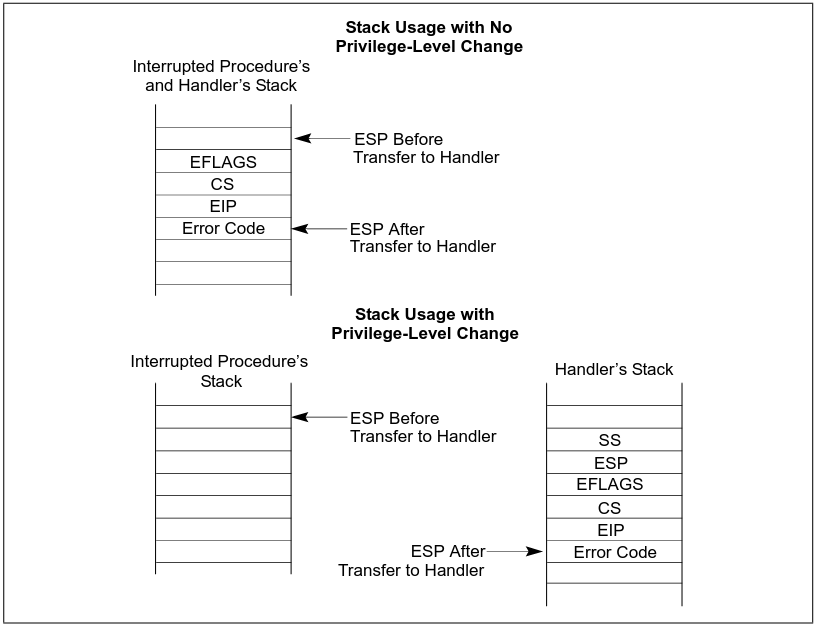

X86-64架构下一个网卡中断的处理流程
Table of Contents
本文以一个网卡中断的处理过程来研究X86-64的中断管理，这个调用流程如下：
=> e1000_intr => __handle_irq_event_percpu => handle_irq_event => handle_fasteoi_irq => __common_interrupt => common_interrupt => asm_common_interrupt => e1000_clean_rx_irq => e1000_clean => __napi_poll => net_rx_action => handle_softirqs => __irq_exit_rcu => common_interrupt => asm_common_interrupt => finish_task_switch.isra.0 => __schedule => schedule => worker_thread => kthread => ret_from_fork => ret_from_fork_asm
1. 中断向量表初始化
X86-64的外部中断通过idt_setup_apic_and_irq_gates函数来注册，但是外部中断表本身的内容通过irq_entries_start符号描述。下面分这两方面来介绍X86-64的初始化。
1.1. 外部中断向量表构造
下面的汇编代码描述了外部中断向量表的内容：
.align IDT_ALIGN
SYM_CODE_START(irq_entries_start)
vector=FIRST_EXTERNAL_VECTOR
.rept NR_EXTERNAL_VECTORS
UNWIND_HINT_IRET_REGS
0 :
ENDBR
.byte 0x6a, vector
jmp asm_common_interrupt
/* Ensure that the above is IDT_ALIGN bytes max */
.fill 0b + IDT_ALIGN - ., 1, 0xcc
vector = vector+1
.endr
SYM_CODE_END(irq_entries_start)
这里NR_EXTERNAL_VECTORS以及FIRST_EXTERNAL_VECTOR被如下方式定义：
/* * Posted interrupt notification vector for all device MSIs delivered to * the host kernel. */ #define POSTED_MSI_NOTIFICATION_VECTOR 0xeb /* * IDT vectors usable for external interrupt sources start at 0x20. * (0x80 is the syscall vector, 0x30-0x3f are for ISA) */ #define FIRST_EXTERNAL_VECTOR 0x20 #ifdef CONFIG_X86_LOCAL_APIC #define FIRST_SYSTEM_VECTOR POSTED_MSI_NOTIFICATION_VECTOR #else #define FIRST_SYSTEM_VECTOR NR_VECTORS #endif #define NR_EXTERNAL_VECTORS (FIRST_SYSTEM_VECTOR - FIRST_EXTERNAL_VECTOR)
X86-64架构对于中断号的使用是划分了范围的，0x20是外部中断向量的起始位置，所谓外部中断源是指硬件设备（如键盘、网卡、定时器等）通过中断控制器（如 PIC、APIC或Local APIC）触发的中断，这些外部设备都需要通过中断控制器再中断CPU。
现代x86-64架构一般都配置了CONFIG_X86_LOCAL_APIC，所以FIRST_SYSTEM_VECTOR就是POSTED_MSI_NOTIFICATION_VECTOR，POSTED_MSI_NOTIFICATION_VECTOR（向量号 0xEB）主要用在中断虚拟机化里，当设备通过 MSI（Message Signaled Interrupts）触发中断时，如果设备的中断目标是虚拟机（vCPU），并且这个vCPU正在运行，且它支持APICv，APIC会直接通过PI机制将中断注入到目标虚拟机。如果目标虚拟机vCPU未运行（例如调度到宿主机的其他线程上），则会触发POSTED_MSI_NOTIFICATION_VECTOR（0xEB）来通知宿主机，传统中断处理中，当设备向虚拟机发送中断时，通常需要以下步骤，首先触发中断导致虚拟机VM-Exit。然后宿主机内核处理中断后，再注入到虚拟机。这种方法会带来大量的性能开销，尤其是I/O密集型工作负载（如网卡或存储设备）会产生频繁的中断。使用POSTED_MSI_NOTIFICATION_VECTOR和PI机制后，如果目标vCPU正在运行，则直接将中断注入虚拟机，完全避免VM-Exit。如果目标vCPU未运行，仅在必要时通知宿主机处理，这大幅减少了VM-Exit的次数。
所以[0x20, 0xeb)共计203个向量号用于外部设备中断，低于0x20的中断号一般用于处理CPU内部异常，比如除0错误，调试以及Page Fault等，NMI使用的向量号也低于0x20。
使用.byte硬编码push指令的方式主要是确保push指令加立即数保持在两个字节，直接用push的伪指令，在立即数超过127时，会符号扩展，将这个push+立即数变成5字节，1字节是push本身，4字节是符号扩展后的32位立即数了，而IDT entry stub需要保持固定大小（IDT_ALIGN 对齐），否则布局错乱，导致中断分发混乱。
最后反汇编vmlinux查看被编译出来的irq_entries_start符号处的指令，就类似下面的模式：
ffffffff81e00230 <irq_entries_start>: ffffffff81e00230: f3 0f 1e fa endbr64 ffffffff81e00234: 6a 20 push $0x20 ffffffff81e00236: e9 05 13 00 00 jmp ffffffff81e01540 <asm_common_interrupt> ffffffff81e0023b: cc int3 ffffffff81e0023c: cc int3 ffffffff81e0023d: cc int3 ffffffff81e0023e: cc int3 ffffffff81e0023f: cc int3 ffffffff81e00240: f3 0f 1e fa endbr64 ffffffff81e00244: 6a 21 push $0x21 ffffffff81e00246: e9 f5 12 00 00 jmp ffffffff81e01540 <asm_common_interrupt> ffffffff81e0024b: cc int3 ffffffff81e0024c: cc int3 ffffffff81e0024d: cc int3 ffffffff81e0024e: cc int3 ffffffff81e0024f: cc int3
每个中断句柄入口的代码都是相似的几条指令，唯一的不同就是push到栈上的向量号不一样。注意每个中断句柄的入口，其第一条指令都是endbr64，这是因为内核开启了X86_KERNEL_IBT配置的缘故，该指令的作用是标记合法的间接跳转目标，确保控制流的安全性。所谓间接跳转，比如间接调用或中断处理程序入口（因为硬件会自动往中断句柄跳）。如果跳转到没有endbr64的地址，处理器会触发异常（#CP: Control Protection Exception），从而防御攻击。
.align IDT_ALIGN指明了接下来的汇编符号（代码）要对齐到某个字节，现代Intel处理器一般启用了IBT(Intel CET，Control-flow Enforcement Technology)，这是一种安全机制，用于防范间接分支跳转攻击，这些攻击会劫持程序的控制流，跳转到恶意代码或利用程序中合法代码片段进行恶意行为，启用了这个配置，就会对齐到16字节处。
.rept宏指令表示在它们之间的指令需要重复编出NR_EXTERNAL_VECTORS次.
1.2. 注册外部中断向量表
本节开始分析注册中断的函数idt_setup_apic_and_irq_gates：
/**
* idt_setup_apic_and_irq_gates - Setup APIC/SMP and normal interrupt gates
*/
void __init idt_setup_apic_and_irq_gates(void)
{
int i = FIRST_EXTERNAL_VECTOR;
void *entry;
idt_setup_from_table(idt_table, apic_idts, ARRAY_SIZE(apic_idts), true);
for_each_clear_bit_from(i, system_vectors, FIRST_SYSTEM_VECTOR) {
entry = irq_entries_start + IDT_ALIGN * (i - FIRST_EXTERNAL_VECTOR);
set_intr_gate(i, entry);
}
#ifdef CONFIG_X86_LOCAL_APIC
for_each_clear_bit_from(i, system_vectors, NR_VECTORS) {
/*
* Don't set the non assigned system vectors in the
* system_vectors bitmap. Otherwise they show up in
* /proc/interrupts.
*/
entry = spurious_entries_start + IDT_ALIGN * (i - FIRST_SYSTEM_VECTOR);
set_intr_gate(i, entry);
}
#endif
/* Map IDT into CPU entry area and reload it. */
idt_map_in_cea();
load_idt(&idt_descr);
/* Make the IDT table read only */
set_memory_ro((unsigned long)&idt_table, 1);
idt_setup_done = true;
}
该函数主要分为几个部分，第一个部分是将apic_idts里的中断向量拷贝到idt_table里，第二部分针对前面还没有设置的向量，通过set_intr_gate继续往idt_table里设置，以上两部分设置完后其实都还是在内存里，所以最后的第三部分就是通过idt_map_in_cea将这个表设置好映射关系，并将这个中断表通过lidt指令加载到idt寄存器。
先分析第一部分，idt_setup_from_table函数：
arch/x86/kernel/idt.c
static __init void
idt_setup_from_table(gate_desc *idt, const struct idt_data *t, int size, bool sys)
{
gate_desc desc;
for (; size > 0; t++, size--) {
idt_init_desc(&desc, t);
write_idt_entry(idt, t->vector, &desc);
if (sys)
set_bit(t->vector, system_vectors);
}
}
这里首先介绍/分析apic_idts表：
arch/x86/kernel/idt.c
/*
* The APIC and SMP idt entries
*/
static const __initconst struct idt_data apic_idts[] = {
#ifdef CONFIG_SMP
INTG(RESCHEDULE_VECTOR, asm_sysvec_reschedule_ipi),
INTG(CALL_FUNCTION_VECTOR, asm_sysvec_call_function),
INTG(CALL_FUNCTION_SINGLE_VECTOR, asm_sysvec_call_function_single),
INTG(REBOOT_VECTOR, asm_sysvec_reboot),
#endif
#ifdef CONFIG_X86_THERMAL_VECTOR
INTG(THERMAL_APIC_VECTOR, asm_sysvec_thermal),
#endif
#ifdef CONFIG_X86_MCE_THRESHOLD
INTG(THRESHOLD_APIC_VECTOR, asm_sysvec_threshold),
#endif
#ifdef CONFIG_X86_MCE_AMD
INTG(DEFERRED_ERROR_VECTOR, asm_sysvec_deferred_error),
#endif
#ifdef CONFIG_X86_LOCAL_APIC
INTG(LOCAL_TIMER_VECTOR, asm_sysvec_apic_timer_interrupt),
INTG(X86_PLATFORM_IPI_VECTOR, asm_sysvec_x86_platform_ipi),
# if IS_ENABLED(CONFIG_KVM)
INTG(POSTED_INTR_VECTOR, asm_sysvec_kvm_posted_intr_ipi),
INTG(POSTED_INTR_WAKEUP_VECTOR, asm_sysvec_kvm_posted_intr_wakeup_ipi),
INTG(POSTED_INTR_NESTED_VECTOR, asm_sysvec_kvm_posted_intr_nested_ipi),
# endif
# ifdef CONFIG_IRQ_WORK
INTG(IRQ_WORK_VECTOR, asm_sysvec_irq_work),
# endif
INTG(SPURIOUS_APIC_VECTOR, asm_sysvec_spurious_apic_interrupt),
INTG(ERROR_APIC_VECTOR, asm_sysvec_error_interrupt),
# ifdef CONFIG_X86_POSTED_MSI
INTG(POSTED_MSI_NOTIFICATION_VECTOR, asm_sysvec_posted_msi_notification),
# endif
#endif
};
以asm_sysvec_reschedule_ipi为例分析它的实现：
DECLARE_IDTENTRY(RESCHEDULE_VECTOR, sysvec_reschedule_ipi);
而DECLARE_IDTENTRY会依据当前编译单元是.c文件或.S文件有不同的定义，对于.c来说：
arch/x86/include/asm/idtentry.h /** * DECLARE_IDTENTRY - Declare functions for simple IDT entry points * No error code pushed by hardware * @vector: Vector number (ignored for C) * @func: Function name of the entry point * * Declares four functions: * - The ASM entry point: asm_##func * - The XEN PV trap entry point: xen_##func (maybe unused) * - The C handler called from the FRED event dispatcher (maybe unused) * - The C handler called from the ASM entry point * * Note: This is the C variant of DECLARE_IDTENTRY(). As the name says it * declares the entry points for usage in C code. There is an ASM variant * as well which is used to emit the entry stubs in entry_32/64.S. */ #define DECLARE_IDTENTRY(vector, func) \ asmlinkage void asm_##func(void); \ asmlinkage void xen_asm_##func(void); \ void fred_##func(struct pt_regs *regs); \ __visible void func(struct pt_regs *regs)
以上只是给出了比如asm_sysvec_reschedule_ipi这样符号声明，但是对于编译汇编文件.S时再给出asm_sysvec_reschedule_ipi的定义：
arch/x86/include/asm/idtentry.h #else /* !__ASSEMBLER__ */ /* * The ASM variants for DECLARE_IDTENTRY*() which emit the ASM entry stubs. */ #define DECLARE_IDTENTRY(vector, func) \ idtentry vector asm_##func func has_error_code=0
identry是实现在arch/x86/entry/entry_64.S里的宏，用来给出参数asm_##func（也就是asm_sysvec_reschedule_ipi）符号的定义，idtentry实际抽象出了所有中断entry时需要做的公共动作，这样定义出的asm_sysvec_reschedule_ipi可以理解为中断发生后的第一个要跳转到的地址，具体里面的代码留待后面分析中断执行时再细节分析，这里可以通过反汇编vmlinux先搂一眼asm_sysvec_reschedule_ipi的指令级实现：
ffffffff81e01630 <asm_sysvec_reschedule_ipi>: ffffffff81e01630: f3 0f 1e fa endbr64 ffffffff81e01634: 90 nop ffffffff81e01635: 90 nop ffffffff81e01636: 90 nop ffffffff81e01637: fc cld ffffffff81e01638: 6a ff push $0xffffffffffffffff ffffffff81e0163a: e8 f1 05 00 00 call ffffffff81e01c30 <error_entry> ffffffff81e0163f: 48 89 c4 mov %rax,%rsp ffffffff81e01642: 48 89 e7 mov %rsp,%rdi ffffffff81e01645: e8 36 35 ef ff call ffffffff81cf4b80 <sysvec_reschedule_ipi> ffffffff81e0164a: e9 21 07 00 00 jmp ffffffff81e01d70 <error_return> ffffffff81e0164f: 90 nop
而asm_sysvec_reboot具有类似的结构：
ffffffff81e01650 <asm_sysvec_reboot>: ffffffff81e01650: f3 0f 1e fa endbr64 ffffffff81e01654: 90 nop ffffffff81e01655: 90 nop ffffffff81e01656: 90 nop ffffffff81e01657: fc cld ffffffff81e01658: 6a ff push $0xffffffffffffffff ffffffff81e0165a: e8 d1 05 00 00 call ffffffff81e01c30 <error_entry> ffffffff81e0165f: 48 89 c4 mov %rax,%rsp ffffffff81e01662: 48 89 e7 mov %rsp,%rdi ffffffff81e01665: e8 86 34 ef ff call ffffffff81cf4af0 <sysvec_reboot> ffffffff81e0166a: e9 01 07 00 00 jmp ffffffff81e01d70 <error_return> ffffffff81e0166f: 90 nop
可以想见，error_entry里就会有具体中断句柄（sysvec_reschedule_ipi/sysvec_reboot等）进入前的现场保存，而error_return里会有中断句柄返回前的现场恢复操作，而call sysvec_reschedule_ipi，其实就是宏汇编调用链：
identry->idtentry_body->call \cfunc，
这里cfunc就是identry的第三个参数cfunc，在这个例子下就是上面DECLARE_IDTENTRY的第二个参数sysvec_reschedule_ipi：
DECLARE_IDTENTRY(RESCHEDULE_VECTOR, sysvec_reschedule_ipi);
所以才有了上面贴的反汇编里有指令call sysvec_reschedule_ipi，那么这个符号又是哪里定义的呢？如下：
arch/x86/kernel/smp.c
DEFINE_IDTENTRY_SYSVEC_SIMPLE(sysvec_reschedule_ipi)
{
apic_eoi();
trace_reschedule_entry(RESCHEDULE_VECTOR);
inc_irq_stat(irq_resched_count);
scheduler_ipi();
trace_reschedule_exit(RESCHEDULE_VECTOR);
}
arch/x86/include/asm/idtentry.h
#define DEFINE_IDTENTRY_SYSVEC_SIMPLE(func) \
static __always_inline void __##func(struct pt_regs *regs); \
\
static __always_inline void instr_##func(struct pt_regs *regs) \
{ \
__irq_enter_raw(); \
__##func (regs); \
__irq_exit_raw(); \
} \
\
__visible noinstr void func(struct pt_regs *regs) \
{ \
irqentry_state_t state = irqentry_enter(regs); \
\
kvm_set_cpu_l1tf_flush_l1d(); \
instrumentation_begin(); \
instr_##func (regs); \
instrumentation_end(); \
irqentry_exit(regs, state); \
} \
\
void fred_##func(struct pt_regs *regs) \
{ \
instr_##func (regs); \
} \
\
static __always_inline void __##func(struct pt_regs *regs)
注意这里最后的__##func的函数体就是前面的：
{
apic_eoi();
trace_reschedule_entry(RESCHEDULE_VECTOR);
inc_irq_stat(irq_resched_count);
scheduler_ipi();
trace_reschedule_exit(RESCHEDULE_VECTOR);
}
相当于说identry宏汇编里面会封装所有中断处理的公共逻辑比如保持/恢复现场，而具体的业务逻辑 （具体的某个中断号对应的处理逻辑）则由传进去的cfunc决定，这里是sysvec_reschedule_ipi符号， 类似使用这种的还有很多比如：
DECLARE_IDTENTRY_SYSVEC(REBOOT_VECTOR, sysvec_reboot);
这些逻辑也体现了一种封装/继承的思想，未来打算将某个向量号XXX，分配给某个具体函数funcxxx处理时只需写：
DECLARE_IDTENTRY_SYSVEC(XXX, funcxxx)
同时用类似DEFINE_IDTENTRY_SYSVEC_SIMPLE这样的宏来给出其具体的业务逻辑：
DEFINE_IDTENTRY_SYSVEC_SIMPLE(funcxxx)
对于sysvec_reschedule_ipi的具体业务逻辑就是scheduler_ipi，而至于公共的中断处理逻辑，如下宏调用链会替我们操心处理好（并定义出相关符号可以调用）：
DECLARE_IDTENTRY_SYSVEC->DECLARE_IDTENTRY->idtentry
具体执行的这些细节留待后面中断执行时再分析，这里还是聚焦中断向量表的注册。
分析到目前，就是想回答说类似asm_sysvec_reschedule_ipi/asm_sysvec_reboot等这样的句柄有了定义（addr），那么INTG的实现就可以赋值了：
#define G(_vector, _addr, _ist, _type, _dpl, _segment) \
{ \
.vector = _vector, \
.bits.ist = _ist, \
.bits.type = _type, \
.bits.dpl = _dpl, \
.bits.p = 1, \
.addr = _addr, \
.segment = _segment, \
}
/* Interrupt gate */
#define INTG(_vector, _addr) \
G(_vector, _addr, DEFAULT_STACK, GATE_INTERRUPT, DPL0, __KERNEL_CS)
这里比较关键的就是跳转地址给到了idt_data::addr，这样apic_idts表的内容就构造完了，回过头来看，apic_idts里其实就是除开0-31的cpu内部异常以及32-NR_EXTERNAL_VECTORS的外部中断的系统向量，主要是内核用来管理的比如重调度，让所有cpu执行某个函数等。
再回到idt_setup_apic_and_irq_gates->idt_setup_from_table函数，这里再贴下：
static __init void
idt_setup_from_table(gate_desc *idt, const struct idt_data *t, int size, bool sys)
{
gate_desc desc;
for (; size > 0; t++, size--) {
idt_init_desc(&desc, t);
write_idt_entry(idt, t->vector, &desc);
if (sys)
set_bit(t->vector, system_vectors);
}
}
对于apic_idts里的所有条目，都要调用相应的函数进行处理，每个条目作为输入调用idt_init_desc函数：
static inline void idt_init_desc(gate_desc *gate, const struct idt_data *d)
{
unsigned long addr = (unsigned long) d->addr;
gate->offset_low = (u16) addr;
gate->segment = (u16) d->segment;
gate->bits = d->bits;
gate->offset_middle = (u16) (addr >> 16);
#ifdef CONFIG_X86_64
gate->offset_high = (u32) (addr >> 32);
gate->reserved = 0;
#endif
}
这里可以看到，主要的逻辑是地址需要转换成low/middle/high部分，其它都是拷贝赋值，设置好gate_desc后，就调用write_idt_entry将这个中断描述符拷贝到全局表idt_table里，其实际实现就是native_write_idt_entry：
static inline void native_write_idt_entry(gate_desc *idt, int entry, const gate_desc *gate)
{
memcpy(&idt[entry], gate, sizeof(*gate));
}
这里entry传入的就是中断号，它也指明了应该将这个中断描述符拷贝到idt_table里的哪个位置。最后system_vectors是一个全局的bitmap，它记录了哪些中断已经被设置，并且主要针对sys vector（系统向量）才设置为true，也就是apic_idts里的向量。
继续往下看：
for_each_clear_bit_from(i, system_vectors, FIRST_SYSTEM_VECTOR) {
entry = irq_entries_start + IDT_ALIGN * (i - FIRST_EXTERNAL_VECTOR);
set_intr_gate(i, entry);
}
这段代码主要是针对从第一个外部向量FIRST_SYSTEM_VECTOR开始，如果在system_vectors里还没有设置的话，就将irq_entries_start起始的向量条目的地址通过set_intr_gate设置到idt_table里：
static __init void set_intr_gate(unsigned int n, const void *addr)
{
struct idt_data data;
init_idt_data(&data, n, addr);
idt_setup_from_table(idt_table, &data, 1, false);
}
这里通过init_idt_data初始化一个idt_data，然后调用前面介绍过的idt_setup_from_table将irq_entries_start里的中断句柄也设置到idt_table里了，只不过注意这里最后一个参数是false，因为这是外部中断了，不是系统向量。
再往下的代码，是针对从i开始，在system_vectors里还没有设置向量的，要设置一个伪中断向量处理函数到idt_table，以作为一个兜底的处理手段，如果某个中断向量没有被内核分配给实际设备驱动（比如硬件根本没有使用这个向量），但硬件/芯片组错误地触发了这个中断，就会走到common_spurious->spurious_interrupt 这个入口。如果没有这个处理，CPU接到未注册向量的中断时会导致异常（或直接挂死），所以需要有一个安全的默认处理逻辑来“吃掉”它。比如某些老硬件、总线、电气干扰可能导致错误中断信号。在handle_spurious_interrupt里，内核不会尝试去真正处理这个中断，而是记录一次spurious interrupt计数（方便/proc/interrupts统计）。通常直接返回，不触发调度，也不应答给具体驱动。某些平台可能会尝试向APIC发送End-Of-Interrupt(EOI)以防止中断卡死。
spurious_entries_start定义如下：
./arch/x86/include/asm/idtentry.h
SYM_CODE_START(spurious_entries_start)
vector=FIRST_SYSTEM_VECTOR
.rept NR_SYSTEM_VECTORS
UNWIND_HINT_IRET_REGS
0 :
ENDBR
.byte 0x6a, vector
jmp asm_spurious_interrupt
/* Ensure that the above is IDT_ALIGN bytes max */
.fill 0b + IDT_ALIGN - ., 1, 0xcc
vector = vector+1
.endr
SYM_CODE_END(spurious_entries_start)
asm_spurious_interrupt类似前面定义符号asm_sysvec_reschedule_ipi，在编译C文件时只有声明：
arch/x86/include/asm/idtentry.h DECLARE_IDTENTRY_IRQ(X86_TRAP_OTHER, spurious_interrupt); #define DECLARE_IDTENTRY_IRQ(vector, func) \ DECLARE_IDTENTRY_ERRORCODE(vector, func) #define DECLARE_IDTENTRY_ERRORCODE(vector, func) \ asmlinkage void asm_##func(void); \ asmlinkage void xen_asm_##func(void); \ __visible void func(struct pt_regs *regs, unsigned long error_code)
而在汇编.S文件时，才给出这个符号的定义：
arch/x86/include/asm/idtentry.h #define DECLARE_IDTENTRY_ERRORCODE(vector, func) \ idtentry vector asm_##func func has_error_code=1
这和前面介绍ipi中断时类似。
注意这里has_error_code为1，就是后面有介绍的orig_ax有值的三种情况之一。
下一个要重点分析的就是idt_map_in_cea函数：
static void __init idt_map_in_cea(void)
{
/*
* Set the IDT descriptor to a fixed read-only location in the cpu
* entry area, so that the "sidt" instruction will not leak the
* location of the kernel, and to defend the IDT against arbitrary
* memory write vulnerabilities.
*/
cea_set_pte(CPU_ENTRY_AREA_RO_IDT_VADDR, __pa_symbol(idt_table),
PAGE_KERNEL_RO);
idt_descr.address = CPU_ENTRY_AREA_RO_IDT;
}
这里首先介绍一个宏CPU_ENTRY_AREA_RO_IDT_VADDR：
arch/x86/include/asm/pgtable_areas.h #define CPU_ENTRY_AREA_RO_IDT_VADDR ((void *)CPU_ENTRY_AREA_RO_IDT) /* Single page reserved for the readonly IDT mapping: */ #define CPU_ENTRY_AREA_RO_IDT CPU_ENTRY_AREA_BASE
arch/x86/include/asm/pgtable_64_types.h #define CPU_ENTRY_AREA_BASE (CPU_ENTRY_AREA_PGD << P4D_SHIFT) #define CPU_ENTRY_AREA_PGD _AC(-4, UL) #define P4D_SHIFT 39
也就是说，CPU_ENTRY_AREA_RO_IDT_VADDR最后的值就是0xfffffe0000000000，这是一个虚拟地址，x86-64下虚拟地址的分布介绍在Documentation/arch/x86/x86_64/mm.rst文件里，比如0000000000000000-00007fffffffefff共计128TB是用户空间的虚拟内存。而ffffc90000000000-ffffe8ffffffffff共计32TB是内核的vmalloc/ioremap空间了。
回到CPU_ENTRY_AREA_RO_IDT_VADDR（fffffe0000000000），fffffe0000000000-fffffe7fffffffff的512GB是cpu_entry_area mapping区域，这个区域就是提供类似idt表，可以进入中断处理代码，中断可以在用户态程序运行时产生，所以它是Page-Global页，这样的页用户态和内核态都可以访问，并且在任务切换或者写cr3时，page global的页不会刷tlb，也就是这样的页是固定映射，而cea_set_pte函数正是在完成这样的映射：
void cea_set_pte(void *cea_vaddr, phys_addr_t pa, pgprot_t flags)
{
unsigned long va = (unsigned long) cea_vaddr;
pte_t pte = pfn_pte(pa >> PAGE_SHIFT, flags);
/*
* The cpu_entry_area is shared between the user and kernel
* page tables. All of its ptes can safely be global.
* _PAGE_GLOBAL gets reused to help indicate PROT_NONE for
* non-present PTEs, so be careful not to set it in that
* case to avoid confusion.
*/
if (boot_cpu_has(X86_FEATURE_PGE) &&
(pgprot_val(flags) & _PAGE_PRESENT))
pte = pte_set_flags(pte, _PAGE_GLOBAL);
set_pte_vaddr(va, pte);
}
整个函数是在设置各级页表的页表项内容，以完成虚拟地址到idt_table所在物理地址的映射，要映射到idt_table的物理地址，那么必须先知道idt_table的物理地址，这通过宏__pa_symbol做到：
arch/x86/include/asm/page.h #define __pa_symbol(x) \ __phys_addr_symbol(__phys_reloc_hide((unsigned long)(x)))
arch/x86/include/asm/page_64.h #define __phys_addr_symbol(x) \ ((unsigned long)(x) - __START_KERNEL_map + phys_base)
这里涉及到两个关键变量，一是__START_KERNEL_map，一是phys_base，x86-64架构上一般如下定义__START_KERNEL_map：
x86/include/asm/page_64_types.h #define __START_KERNEL_map _AC(0xffffffff80000000, UL)
根据Documentation/arch/x86/x86_64/mm.rst的描述，这个地址段主要用来映射内核镜像自身：
ffffffff80000000 | -2 GB | ffffffff9fffffff | 512 MB | kernel text mapping, mapped to physical address 0
那么idt_table属于内核镜像里的符号，可以采用__phys_addr_symbol获取内核镜像里符号的物理地址：
/* Must be page-aligned because the real IDT is used in the cpu entry area */ static gate_desc idt_table[IDT_ENTRIES] __page_aligned_bss;
另一个phys_base表示实际内核镜像映射在哪个物理地址上，也就是__START_KERNEL_map虚拟地址映射在phys_base这个物理地址上，且按地址往后依次映射。phys_base在__startup_64函数里定出：
/* * Compute the delta between the address I am compiled to run at * and the address I am actually running at. */ phys_base = load_delta = __START_KERNEL_map + p2v_offset;
__startup_64这个函数由startup_64汇编函数调用：
arch/x86/kernel/head_64.S call __startup_64
关于startup_64和__startup_64的具体细节逻辑参见笔者其它介绍启动过程的文章，这里只是需要知道，传入p2v_offset会用来计算内核镜像映射的起始物理地址phys_base，并且这个值在开启KASLR地址随机化时，它是随机变化的，正常来说，我们会假定内核映射的起始虚拟地址是__START_KERNEL_map，对应的起始物理地址就是0，但是处于安全考虑，这个起始物理地址会有一定的随机偏移，那么起始物理地址phys_base离起始虚拟地址__START_KERNEL_map的距离记为p2v_offset，那么有：
p2v_offset = phys_base - __START_KERNEL_map
在startup_64里可以根据rip，先有p2v_offset作为参数调用__startup_64这个C函数，这样自然有：
phys_base = __START_KERNEL_map + p2v_offset
直观的理解就是__START_KERNEL_map映射到了起始物理地址phys_base，这样内核镜像里的virt addr减去__START_KERNEL_map再加上phys_base，就是这个虚拟地址对应的物理地址。__pa_symbol(sym) 适用 于编译时已知的符号地址，也就是来自内核镜像自身的符号转成物理地址。这种转换方式可以理解成内核里手工计算virt addr/phys addr之间的转换（内核镜像自身的地址），能转换的前提是，在启动过程的__startup_64函数里提前建立了将内核镜像自身由虚拟地址范围[__START_KERNEL_map，__START_KERNEL_map+image_size]映射到物理地址范围[phys_base，phys_base+image_size]的范围，这样硬件上有CPU访问虚拟地址（0xffffffff81000000 起始），MMU根据CR3页表转换到物理地址（phys_base），代码里比如调试、符号地址计算时，可以像这里这样手工做转换，这样转出来的虚拟地址访问，cpu访问不会报Page Fault，原因是页表没有建立。
第三个参数是页表项的权限，它会和接下来在cea_set_pte里相关逻辑得到的物理地址拼成pte条目进行设置到对应的页表项，在内存里。现在详细分析这个PAGE_KERNEL_RO：
arch/x86/include/asm/pgtable_types.h #define PAGE_KERNEL_RO __pgprot_mask(__PAGE_KERNEL_RO | _ENC)
_ENC主要是和AMD的一个内存加密功能有关，这里暂不介绍。先看__pgprot_mask宏：
arch/x86/include/asm/pgtable_types.h
#define __pgprot_mask(x) __pgprot((x) & __default_kernel_pte_mask)
#define __pg(x) __pgprot(x)
#define __pgprot(x) ((pgprot_t) { (x) } )
typedef struct pgprot { pgprotval_t pgprot; } pgprot_t;
arch/x86/include/asm/pgtable_64_types.h typedef unsigned long pgprotval_t;
可以看到__pgprot_mask最后出来的其实就是一个unsigned long的数，只不过里面的各个bit位各有意义。__default_kernel_pte_mask一般在开启时，会清除_PAGE_GLOBAL标志，因为这个表示的是页面所有用户都可以访问（包括用户/内核态）：
arch/x86/mm/init.c: probe_page_size_mask /* Except when with PTI where the kernel is mostly non-Global: */ if (cpu_feature_enabled(X86_FEATURE_PTI)) __default_kernel_pte_mask &= ~_PAGE_GLOBAL;
arch/x86/mm/init_64.c /* Bits allowed in normal kernel mappings: */ pteval_t __default_kernel_pte_mask __read_mostly = ~0;p
而__PAGE_KERNEL_RO按如下方式定义出：
arch/x86/include/asm/pgtable_types.h #define __PAGE_KERNEL_RO (__PP| 0| 0|___A|__NX| 0| 0|___G)
__PP这些宏都是硬件页表项里的值，比如__PP按如下代码定出：
arch/x86/include/asm/pgtable_types.h #define __PP _PAGE_PRESENT #define _PAGE_PRESENT (_AT(pteval_t, 1) << _PAGE_BIT_PRESENT) #define _PAGE_BIT_PRESENT 0 /* is present */
这些bit位在硬件手册上是有描述的，比如对于x86-64的四级映射成4KB大小的物理页面时，intel sdm vol3有表解释各个bit位控制的权限：

Figure 1: 映射4KB的页表条目格式
其它权限位就不一一展开了，现在介绍完了调用cea_set_pte的参数，可以回过头来分析cea_set_pte本身的实现了：
void cea_set_pte(void *cea_vaddr, phys_addr_t pa, pgprot_t flags)
{
unsigned long va = (unsigned long) cea_vaddr;
pte_t pte = pfn_pte(pa >> PAGE_SHIFT, flags);
/*
* The cpu_entry_area is shared between the user and kernel
* page tables. All of its ptes can safely be global.
* _PAGE_GLOBAL gets reused to help indicate PROT_NONE for
* non-present PTEs, so be careful not to set it in that
* case to avoid confusion.
*/
if (boot_cpu_has(X86_FEATURE_PGE) &&
(pgprot_val(flags) & _PAGE_PRESENT))
pte = pte_set_flags(pte, _PAGE_GLOBAL);
set_pte_vaddr(va, pte);
}
pte_t类型的量是最终写入到内存页表里的页表项内容，它定义如下:
typedef struct { pteval_t pte; } pte_t;
pteval_t一般依据32/64 bit架构不同而有不同的定义，一般64位下就是一个unsigned long：
typedef unsigned long pteval_t;
从这里也可以看到一个pte entry应该是64 bit长。pfn_pte是一个在mm代码里经常看到的小接口，它接受一个物理地址和一串权限，将它们组合在一起形成一个pte条目：
static inline pte_t pfn_pte(unsigned long page_nr, pgprot_t pgprot)
{
phys_addr_t pfn = (phys_addr_t)page_nr << PAGE_SHIFT;
/* This bit combination is used to mark shadow stacks */
WARN_ON_ONCE((pgprot_val(pgprot) & (_PAGE_DIRTY | _PAGE_RW)) ==
_PAGE_DIRTY);
pfn ^= protnone_mask(pgprot_val(pgprot));
pfn &= PTE_PFN_MASK;
return __pte(pfn | check_pgprot(pgprot));
}
这里可以看到page_nr作为页帧号左移了PAGE_SHIFT，所以实际组成pte的物理地址部分是页对齐物理地址，而业内偏移由虚拟地址低 12位提供。但当时传入的page_nr也是idt_table的具体物理地址（对其到某个字节的）右移了PAGE_SHIFT，这时得到的PFN物理页帧号，二者不是多余且最后的pfn也不等于__pa_symbol(idt_table)的结果。
继续往下看pfn_pte的一个警告检查，如果pgprot里只设置了_PAGE_DIRTY，但没有设置_PAGE_RW，这是一种特殊的“不合常理”的组合，但是这种组合可以用来标记shadow stacks（一种CET feature），通常如果一个页被标记为可写(_PAGE_RW)，CPU在写访问时会设置_PAGE_DIRTY。如果页不可写(!_PAGE_RW)，那么硬件通常不会去设置_PAGE_DIRTY，也就是“不合理”的组合就是没有允许可写，却 置上了_PAGE_DIRTY。
继续往下看代码：
/*
* A clear pte value is special, and doesn't get inverted.
*
* Note that even users that only pass a pgprot_t (rather
* than a full pte) won't trigger the special zero case,
* because even PAGE_NONE has _PAGE_PROTNONE | _PAGE_ACCESSED
* set. So the all zero case really is limited to just the
* cleared page table entry case.
*/
static inline bool __pte_needs_invert(u64 val)
{
return val && !(val & _PAGE_PRESENT);
}
/* Get a mask to xor with the page table entry to get the correct pfn. */
static inline u64 protnone_mask(u64 val)
{
return __pte_needs_invert(val) ? ~0ull : 0;
}
在 x86（特别是 64 位内核）里，页表项（PTE）中存的不是纯粹的物理页帧号(PFN)，而是PFN + 一堆标志位。为了支持mprotect(PROT_NONE)这种“逻辑上存在，但不可访问”的内存映射，Linux 内核引入了一种关于PROTNONE的pfn异或存放机制，内核用反转（invert）PFN的方式来区分普通的“不存在”页，普通有效页以及“PROTNONE”页，如果val != 0以及val & _PAGE_PRESENT!= 0，意味着这个页表项确实映射了一个物理页，所以__pte_needs_invert(val)返回false，不会对pte里的PFN做invert，而如果val = = 0这是最普通的“没映射”的情况，内核调用pte_clear函数就是这样。同样不会做invert。最后，如果val != 0并且val & _PAGE_PRESENT == 0这就是mprotect(PROT_NONE)的典型情况：页逻辑存在，但不可访问。内核为了区分它和“空页”，把PFN部分取反存进去。所以这里__pte_needs_invert(val)返回true，要做invert还原PFN。所以：
pfn ^= protnone_mask(pgprot_val(pgprot));
正是看是否需要针对PROTNONE的情况做异或还原真实的PFN，当然这里的情况是不需要，因为前面有__PP位被设置，protnone_mask返回0，任何数与0做异或还是它自己。
再往下看：
/* Extracts the PFN from a (pte|pmd|pud|pgd)val_t of a 4KB page */ #define PTE_PFN_MASK ((pteval_t)PHYSICAL_PAGE_MASK)
这个宏用来从一个页表条目值里提取出4KB对齐的PFN号码，因为页表条目高位是物理地址，低位部分是一堆权限标志，但是64位的地址也不是高位所有部分都是有效的物理地址，所以有这个PHYSICAL_PAGE_MASK来提取：
#define PHYSICAL_PAGE_MASK (((signed long)PAGE_MASK) & __PHYSICAL_MASK)
PAGE_MASK用来屏蔽掉低位部分的标志：
#define PAGE_MASK (~(PAGE_SIZE - 1))
而__PHYSICAL_MASK用来指明哪些物理bit是有效的：
#define __PHYSICAL_MASK physical_mask
phys_addr_t physical_mask __ro_after_init = (1ULL << __PHYSICAL_MASK_SHIFT) - 1; #define __PHYSICAL_MASK_SHIFT 52
最后__pte实现就很简单了：
#define __pte(x) native_make_pte(x)
static inline pte_t native_make_pte(pteval_t val)
{
return (pte_t) { .pte = val };
}
就是一个简单的赋值操作。 介绍完了pfn_pte，继续往下分析cea_set_pte函数，注意接下来的一段注释，是在说硬件只在present=1时才会真正解读global位，present=0时，global位对硬件来说无意义，所以Linux就“蹭”了一下，把它拿来表示PROT_NONE。这就是注释里说的：要小心别在non-present页上乱设global，否则会跟PROT_NONE混淆，那么这里的情况就是判断出设置了present位，就再设置global位，这样这些映射是全局性的，给它们设_PAGE_GLOBAL可以避免在CR3切换（进程切换）时被flush，提升性能。
pte_set_flags的实现本身比较简单，只是列出下：
static inline pte_t pte_set_flags(pte_t pte, pteval_t set)
{
pteval_t v = native_pte_val(pte);
return native_make_pte(v | set);
}
static inline pte_t native_make_pte(pteval_t val)
{
return (pte_t) { .pte = val };
}
现在有了虚拟地址va以及pte，继续调用set_pte_vaddr来设置pte值：
arch/x86/mm/init_64.c
void set_pte_vaddr(unsigned long vaddr, pte_t pteval)
{
pgd_t *pgd;
p4d_t *p4d_page;
pr_debug("set_pte_vaddr %lx to %lx\n", vaddr, native_pte_val(pteval));
pgd = pgd_offset_k(vaddr);
if (pgd_none(*pgd)) {
printk(KERN_ERR
"PGD FIXMAP MISSING, it should be setup in head.S!\n");
return;
}
p4d_page = p4d_offset(pgd, 0);
set_pte_vaddr_p4d(p4d_page, vaddr, pteval);
}
本质上从set_pte_vaddr开始，就是在一级一级的设置页表项条目的值，这涉及到页表项的计算，在详细分析这个函数前，结合crash里的vtop命令输出的结果，可以验证代码分析的计算结果，vtop用于把一个虚拟地址转换成物理地址，这里的虚拟地址就是前面提到过的0xfffffe0000000000：
crash> vtop 0xfffffe0000000000
VIRTUAL PHYSICAL
fffffe0000000000 5db2d000
PGD DIRECTORY: ffffffffb3422000
PAGE DIRECTORY: 23ffc5067
PUD: 23ffc5000 => 1003b8067
PMD: 1003b8000 => 1003b9067
PTE: 1003b9000 => 800000005db2d121
PAGE: 5db2d000
PTE PHYSICAL FLAGS
800000005db2d121 5db2d000 (PRESENT|ACCESSED|GLOBAL|NX)
PAGE PHYSICAL MAPPING INDEX CNT FLAGS
ffffde8e4176cb40 5db2d000 0 0 1 fffffc0002000 reserved
pgd_offset_k用于从内核空间（init_mm）里找到对应虚拟地址address的pgd条目，并返回指向这个条目的指针：
include/linux/pgtable.h
/*
* a shortcut which implies the use of the kernel's pgd, instead
* of a process's
*/
#define pgd_offset_k(address) pgd_offset(&init_mm, (address))
#define pgd_offset(mm, address) pgd_offset_pgd((mm)->pgd, (address))
static inline pgd_t *pgd_offset_pgd(pgd_t *pgd, unsigned long address)
{
return (pgd + pgd_index(address));
};
#define pgd_index(a) (((a) >> PGDIR_SHIFT) & (PTRS_PER_PGD - 1))
arch/x86/include/asm/pgtable_64_types.h /* * PGDIR_SHIFT determines what a top-level page table entry can map */ #define PGDIR_SHIFT pgdir_shift #define PTRS_PER_PGD 512
pgdir_shift初始默认就是39：
arch/x86/kernel/head64.c unsigned int pgdir_shift __ro_after_init = 39;
只有在开启5级页表时pgdir_shift才可能会调整变大，在crash中使用p pgdir_shift命令可以看到其为39：
crash> p pgdir_shift pgdir_shift = $29 = 39
那么根据前面pgd_offset_k的代码，最后pgd_offset_k返回的地址就是：
init_mm.pgd + (address >> 39 & 511) * 8
这里先分析下init_mm.pgd在代码里是如何得到的：
mm/init-mm.c
struct mm_struct init_mm = {
...
.pgd = swapper_pg_dir,
...
};
arch/x86/include/asm/pgtable_64.h #define swapper_pg_dir init_top_pgt
而init_top_pgt在汇编文件里填充，静态初始化内核启动用的顶层PGD：
arch/x86/kernel/head_64.S SYM_DATA_START_PTI_ALIGNED(init_top_pgt) .quad level3_ident_pgt - __START_KERNEL_map + _KERNPG_TABLE_NOENC .org init_top_pgt + L4_PAGE_OFFSET*8, 0 .quad level3_ident_pgt - __START_KERNEL_map + _KERNPG_TABLE_NOENC .org init_top_pgt + L4_START_KERNEL*8, 0 /* (2^48-(2*1024*1024*1024))/(2^39) = 511 */ .quad level3_kernel_pgt - __START_KERNEL_map + _PAGE_TABLE_NOENC .fill PTI_USER_PGD_FILL,8,0 SYM_DATA_END(init_top_pgt)
这里前两个.quad是针对恒等映射建立的，在cpu刚切分页机制时，可能已经有指令是分页机制前预取的，如果没有恒等映射，可能导致问题。最后一个.quad是建立内核高区虚拟地址映射，而level3_ident_pg/level3_kernel_pgt在笔者另外的文章进行分析，它们也定义在arch/x86/include/asm/pgtable_64.h里。
然后在crash里可以知道pgd（init_top_pgt）的值：
crash> p init_mm.pgd $30 = (pgd_t *) 0xffffffffb3422000 <init_top_pgt>
注意最后乘以8是因为对指针加1实际是加8。这样：
0xffffffffb3422000 + (0xfffffe0000000000 >> 39 & 511) * 8 = 0xffffffffb3422fe0
crash里rd这个内存上的值是可以和crash里得到的顶级页表条目的值23ffc5067对应的：
crash> rd 0xffffffffb3422fe0 ffffffffb3422fe0: 000000023ffc5067 gP.?....
所以总结pgd_offset_k相当于说从内核页表里读出虚拟地址对应的顶级页表条目的值对应的指针。中间的判断是检查顶级pgd指向的条目应该有值，因为其在上面的head_64.S里通过汇编填充，应该是有值的。
继续往下看对p4d_offset的调用：
arch/x86/include/asm/pgtable.h
/* to find an entry in a page-table-directory. */
static inline p4d_t *p4d_offset(pgd_t *pgd, unsigned long address)
{
if (!pgtable_l5_enabled())
return (p4d_t *)pgd;
return (p4d_t *)pgd_page_vaddr(*pgd) + p4d_index(address);
}
AMD桌面上一般没有启动5级页表（cat /proc/self/maps只看到12个非0字符，一个4bit，共48bit），所以走后面的语句：
arch/x86/include/asm/pgtable.h
static inline unsigned long pgd_page_vaddr(pgd_t pgd)
{
return (unsigned long)__va((unsigned long)pgd_val(pgd) & PTE_PFN_MASK);
}
arch/x86/include/asm/page.h #define __va(x) ((void *)((unsigned long)(x)+PAGE_OFFSET))
arch/x86/include/asm/page_types.h #define PAGE_OFFSET ((unsigned long)__PAGE_OFFSET)
arch/x86/include/asm/page_64_types.h #define __PAGE_OFFSET page_offset_base
page_offset_base会在arch/x86/mm/kaslr.c进行随机化，所以最终PAGE_OFFSET的值也是不固定会有随机性，在crash里可以知道page_offset_base的值：
crash> p/x page_offset_base $38 = 0xffff8a92c0000000
*pgd其实是取出pgd对应的页表条目里的值，里面存放了所有p4d条目所在的物理基地址，取出来值后还要和PTE_PFN_MASK做与，和前面介绍PTE_PFN_MASK类似，目的也是去除页表条目值的高位无效部分以及低位标志位部分。得到的这个物理地址再通过__va转换得到虚拟地址，因为cpu后面再往下访问多级页表时，需要访问这个地址，cpu再开启了MMU分页，只能通过虚拟地址来访存。这样最终返回的这个p4d_page地址为：
p4d_page = 0xffff8a92c0000000+0x23ffc5000 = 0xffff8a94fffc5000
crash里rd上面的地址，可以得到p4d（pud，四级页表时）这级页表条目的值：
crash> rd 0xffff8a94fffc5000 ffff8a94fffc5000: 00000001003b8067 g.;.....
这和crash里看到的值是对应的：
PUD: 23ffc5000 => 1003b8067
继续往下分析set_pte_vaddr_p4d：
arch/x86/mm/init_64.c
void set_pte_vaddr_p4d(p4d_t *p4d_page, unsigned long vaddr, pte_t new_pte)
{
p4d_t *p4d = p4d_page + p4d_index(vaddr);
pud_t *pud = fill_pud(p4d, vaddr);
__set_pte_vaddr(pud, vaddr, new_pte);
}
p4d_index如下定义：
arch/x86/include/asm/pgtable.h
static inline unsigned long p4d_index(unsigned long address)
{
return (address >> P4D_SHIFT) & (PTRS_PER_P4D - 1);
}
arch/x86/include/asm/pgtable_64_types.h #define PTRS_PER_P4D ptrs_per_p4d
arch/x86/boot/compressed/pgtable_64.c
unsigned int __section(".data") ptrs_per_p4d = 1;
在crash里也可以查看变量ptrs_per_p4d，其值为1，这样p4d_index返回0，也就是说p4d这一层默认不存在，p4d和p4d_page相等为0xffff8a94fffc5000，fill_pud定义如下：
arch/x86/mm/init_64.c
static pud_t *fill_pud(p4d_t *p4d, unsigned long vaddr)
{
if (p4d_none(*p4d)) {
pud_t *pud = (pud_t *)spp_getpage();
p4d_populate(&init_mm, p4d, pud);
if (pud != pud_offset(p4d, 0))
printk(KERN_ERR "PAGETABLE BUG #01! %p <-> %p\n",
pud, pud_offset(p4d, 0));
}
return pud_offset(p4d, vaddr);
}
参数p4d实际是一个虚拟地址，里面存放一个页表条目，该条目存放下级页表的物理基地址以及一些可 能标志位，如果p4d所指向的条目没有值的话，说明很可能这个条目还没有分配物理页以及和flag一起 构造条目值，是这样的话，就先通过spp_getpage获得下级页表的物理空间（页面），并返回这个物理 页面对应的虚拟地址为pud：
/*
* NOTE: This function is marked __ref because it calls __init function
* (alloc_bootmem_pages). It's safe to do it ONLY when after_bootmem == 0.
*/
static __ref void *spp_getpage(void)
{
void *ptr;
if (after_bootmem)
ptr = (void *) get_zeroed_page(GFP_ATOMIC);
else
ptr = memblock_alloc(PAGE_SIZE, PAGE_SIZE);
if (!ptr || ((unsigned long)ptr & ~PAGE_MASK)) {
panic("set_pte_phys: cannot allocate page data %s\n",
after_bootmem ? "after bootmem" : "");
}
pr_debug("spp_getpage %p\n", ptr);
return ptr;
}
关于__ref简单介绍下，内核镜像里某些段是被init/exit修饰的，这样初始化完成或者/注销时，这些段会被丢弃，这样就可能引出一个潜在的问题，那就是在非init/exit段里用init/exit段里的东西，modpost做了这样的检查，出现这样的情况时就打印警告，但是某些代码确实需要在早期时引用init/exit里的内容，启动完毕正常运行时，又走另外的代码，但它本身可能不在init/exit里，这就需要__ref放入一个单独的段来规避modpost发出的警告，这就是下面的注释说的事情：
/*
* modpost check for section mismatches during the kernel build.
* A section mismatch happens when there are references from a
* code or data section to an init section (both code or data).
* The init sections are (for most archs) discarded by the kernel
* when early init has completed so all such references are potential bugs.
* For exit sections the same issue exists.
*
* The following markers are used for the cases where the reference to
* the *init / *exit section (code or data) is valid and will teach
* modpost not to issue a warning. Intended semantics is that a code or
* data tagged __ref* can reference code or data from init section without
* producing a warning (of course, no warning does not mean code is
* correct, so optimally document why the __ref is needed and why it's OK).
*
* The markers follow same syntax rules as __init / __initdata.
*/
#define __ref __section(".ref.text") noinline
有了上面的理解再来看spp_getpage就简单了：
/*
* NOTE: This function is marked __ref because it calls __init function
* (alloc_bootmem_pages). It's safe to do it ONLY when after_bootmem == 0.
*/
static __ref void *spp_getpage(void)
{
void *ptr;
if (after_bootmem)
ptr = (void *) get_zeroed_page(GFP_ATOMIC);
else
ptr = memblock_alloc(PAGE_SIZE, PAGE_SIZE);
if (!ptr || ((unsigned long)ptr & ~PAGE_MASK)) {
panic("set_pte_phys: cannot allocate page data %s\n",
after_bootmem ? "after bootmem" : "");
}
pr_debug("spp_getpage %p\n", ptr);
return ptr;
}
启动阶段使用memblock内存分配器，memblock_alloc函数，启动完成后使用buddy system提供的get_zeroed_page。 然后通过p4d_populate将条目值设置到p4d指向的条目上：
arch/x86/include/asm/pgalloc.h
static inline void p4d_populate(struct mm_struct *mm, p4d_t *p4d, pud_t *pud)
{
paravirt_alloc_pud(mm, __pa(pud) >> PAGE_SHIFT);
set_p4d(p4d, __p4d(_PAGE_TABLE | __pa(pud)));
}
_PAGE_TABLE是一个常见的用于非底层pte页表条目的标志组合：
/* * Page tables needs to have Write=1 in order for any lower PTEs to be * writable. This includes shadow stack memory (Write=0, Dirty=1) */ #define _PAGE_TABLE (__PP|__RW|_USR|___A| 0|___D| 0| 0| _ENC)
page table权限标志需要可写，这样可以在里面填上指向下级页表的条目。__pa用于将一个内核虚拟地址转换成物理地址：
arch/x86/include/asm/page.h #ifndef __pa #define __pa(x) __phys_addr((unsigned long)(x)) #endif
arch/x86/include/asm/page_64.h
#define __phys_addr(x) __phys_addr_nodebug(x)
static __always_inline unsigned long __phys_addr_nodebug(unsigned long x)
{
unsigned long y = x - __START_KERNEL_map;
/* use the carry flag to determine if x was < __START_KERNEL_map */
x = y + ((x > y) ? phys_base : (__START_KERNEL_map - PAGE_OFFSET));
return x;
}
这里__phys_addr_nodebug实际是前面介绍过的__phys_addr_symbol的一个加强版本，对于内核镜像自身的符号，也就是x > __START_KERNEL_map时，使用前面介绍过的转换公式：phy_addr = x -__START_KERNEL_map + phy_base，而x < __START_KERNEL_map时，差值y会溢出变得无限大，导致x > y不满足，这时返回的phy_addr(x) = x - __START_KERNEL_map + __START_KERNEL_map - PAGE_OFFSET = x - PAGE_OFFSET，也就是所有物理内存都会映射在内核空间的虚拟地址在PAGE_OFFSET，这样给定内核空间的虚拟地址，减去PAGE_OFFSET即得物理地址。
__p4d本身不用介绍了，就是拿页表flag标志_PAGE_TABLE和物理地址一起组成一个页表项，继续看代码，
arch/x86/include/asm/pgtable.h #ifndef set_p4d # define set_p4d(p4dp, p4d) native_set_p4d(p4dp, p4d) #endif
static inline void native_set_p4d(p4d_t *p4dp, p4d_t p4d)
{
pgd_t pgd;
if (pgtable_l5_enabled() ||
!IS_ENABLED(CONFIG_MITIGATION_PAGE_TABLE_ISOLATION)) {
WRITE_ONCE(*p4dp, p4d);
return;
}
pgd = native_make_pgd(native_p4d_val(p4d));
pgd = pti_set_user_pgtbl((pgd_t *)p4dp, pgd);
WRITE_ONCE(*p4dp, native_make_p4d(native_pgd_val(pgd)));
}
WRITE_ONCE前面两行是关于pti内核/用户态页表隔离的逻辑，最后一行是设置对应的p4d值到p4dp所指向的位置，这里WRITE_ONCE是一个宏，传入*p4dp这样表达式在宏里展开，实际写的就是p4dp所指向的位置。
__set_pte_vaddr里最终的结果就是这样一级级的填充页表，没有分配物理页面时就通过spp_getpage去得到页面，再具体的细节就不详细分析了。最终内核虚拟地址CPU_ENTRY_AREA_RO_IDT_VADDR（或CPU_ENTRY_AREA_RO_IDT，为0xfffffe0000000000）上就映射了idt_table，内核态和用户态都可以访问。
介绍完了cea_set_pte后，这里想验证几个地址转换/映射的最终结果，这可以在crash里去实验，首先可以打印下vtop 0xfffffe0000000000的结果：
crash> vtop 0xfffffe0000000000
VIRTUAL PHYSICAL
fffffe0000000000 5db2d000
PGD DIRECTORY: ffffffffb3422000
PAGE DIRECTORY: 23ffc5067
PUD: 23ffc5000 => 1003b8067
PMD: 1003b8000 => 1003b9067
PTE: 1003b9000 => 800000005db2d121
PAGE: 5db2d000
PTE PHYSICAL FLAGS
800000005db2d121 5db2d000 (PRESENT|ACCESSED|GLOBAL|NX)
PAGE PHYSICAL MAPPING INDEX CNT FLAGS
ffffde8e4176cb40 5db2d000 0 0 1 fffffc0002000 reserved
可见，最终这个虚拟地址被映射到了5db2d000这个物理页面，那么想必idt_table这个量就在这个物理页面上，再回过头来看上面的设置页表的过程，其实就是已知了idt_table的物理页面，最后一级的pte值是知道的，只是在建立中间页表条目的值，这样在crash里也可以打印idt_table的映射情况，来验证其对应的物理地址就是5db2d000：
crash> p &idt_table
$71 = (gate_desc (*)[256]) 0xffffffffb3f2d000 <idt_table>
crash> vtop 0xffffffffb3f2d000
VIRTUAL PHYSICAL
ffffffffb3f2d000 5db2d000
PGD DIRECTORY: ffffffffb3422000
PAGE DIRECTORY: 5d027067
PUD: 5d027ff0 => 5d028063
PMD: 5d028cf8 => 1003ba063
PTE: 1003ba968 => 800000005db2d121
PAGE: 5db2d000
PTE PHYSICAL FLAGS
800000005db2d121 5db2d000 (PRESENT|ACCESSED|GLOBAL|NX)
PAGE PHYSICAL MAPPING INDEX CNT FLAGS
ffffde8e4176cb40 5db2d000 0 0 1 fffffc0002000 reserve
可见物理地址确实一样，也就是idt_table这个物理地址映射了两个虚拟地址，一个是idt_table本身有个虚拟地址，一个是CPU_ENTRY_AREA_RO_IDT_VADDR（0xfffffe0000000000）。
这里其实访问idt表既能通过idt_table自身有个虚拟地址，也能通过CPU_ENTRY_AREA_RO_IDT_VADDR，但是通过前者的话可能会暴露内核随机化的情况，可以猜到内核偏移的基地址，所以会再映射到这个CPU_ENTRY_AREA_RO_IDT_VADDR虚拟地址上，这样用户态使用sidt/lidt指令得到的是一个固定的且只读的地址，与内核随机化信息无关。但是crash里打印不出RO（read only）位，因为crash里实际只是打印设置为1的位，但是在x86上只读对应的硬件状态位其实就是_PAGE_RW=0。
调用load_idt是将这个0xfffffe0000000000设置到idtr寄存器，进而让修改过的新的中断描述符表生效：
load_idt(&idt_descr);
#define load_idt(dtr) native_load_idt(dtr)
static __always_inline void native_load_idt(const struct desc_ptr *dtr)
{
asm volatile("lidt %0"::"m" (*dtr));
}
idt_setup_apic_and_irq_gates最后还通过set_memory_ro->change_page_attr_clear来将idt_table的_PAGE_RW和_PAGE_DIRTY同时清掉，这样原始的idt_table也就是只读的了，注意这里是同时清掉_PAGE_RW和_PAGE_DIRTY位，避免出现只读页却是脏的。
/* Make the IDT table read only */ set_memory_ro((unsigned long)&idt_table, 1);
int set_memory_ro(unsigned long addr, int numpages)
{
return change_page_attr_clear(&addr, numpages, __pgprot(_PAGE_RW | _PAGE_DIRTY), 0);
}
以上就是x86-64中断描述符表的注册过程。
2. 一个网卡中断的触发与执行
前层已经分析了外部中断的注册，所有外部中断的向量都在irq_entries_start符号处为起始，它们具有相似的结构。SYM_CODE_START符号本身的定义很简单，就是将中断向量号push到栈上，然后jmp跳转到asm_common_interrupt处处理，中断发生时，硬件自动跳转到irq_entries_staret某个具体的向量号对应的条目开始处理，这样事先在这里push vector号，造成的效果就是好像硬件告诉我们的是哪个中断（号）触发了。
下面继续分析asm_common_interrupt的逻辑，分析它之前需要先找到它的定义，这里再重复下前面节其实都提到过的代码，主要是想简明的总结下“一个宏同时被汇编代码和C代码使用的情况”：
arch/x86/include/asm/idtentry.h /* Device interrupts common/spurious */ DECLARE_IDTENTRY_IRQ(X86_TRAP_OTHER, common_interrupt);
这个文件可以理解成所有中断定义的统一入口，同样的DECLARE_IDTENTRY_IRQ宏，在处理.c文件和汇编.S文件时有不同的定义：
arch/x86/include/asm/idtentry.h #ifndef __ASSEMBLER__ /** * DECLARE_IDTENTRY_ERRORCODE - Declare functions for simple IDT entry points * Error code pushed by hardware * @vector: Vector number (ignored for C) * @func: Function name of the entry point * * Declares three functions: * - The ASM entry point: asm_##func * - The XEN PV trap entry point: xen_##func (maybe unused) * - The C handler called from the ASM entry point * * Same as DECLARE_IDTENTRY, but has an extra error_code argument for the * C-handler. */ #define DECLARE_IDTENTRY_ERRORCODE(vector, func) \ asmlinkage void asm_##func(void); \ asmlinkage void xen_asm_##func(void); \ __visible void func(struct pt_regs *regs, unsigned long error_code) /** * DECLARE_IDTENTRY_IRQ - Declare functions for device interrupt IDT entry * points (common/spurious) * @vector: Vector number (ignored for C) * @func: Function name of the entry point * * Maps to DECLARE_IDTENTRY_ERRORCODE() */ #define DECLARE_IDTENTRY_IRQ(vector, func) \ DECLARE_IDTENTRY_ERRORCODE(vector, func) #else /* !__ASSEMBLER__ */ /* Entries for common/spurious (device) interrupts */ #define DECLARE_IDTENTRY_IRQ(vector, func) \ idtentry_irq vector func
可见，对于c文件来说，asm_common_interrupt这些符号只有声明，真正的定义在处理.S文件时，有自 定义宏汇编idtentry_irq进行展开，这样这个idtentry.h同时会被:
./arch/x86/kernel/idt.c:14:#include <asm/idtentry.h>
这样的.c文件包括，也会被：
./arch/x86/entry/entry_64.S:552:#include <asm/idtentry.h>
这样的汇编文件包括。但是不同的文件看到的实现不一样，一个只有声明，一个却有定义。这其实正是Linux内核在“同一份描述文件同时服务于C和汇编”的一个经典技巧。一个中断/异常向量，需要两部分内容，一是汇编入口（stub）：CPU 硬件跳进来的第一条指令，保存上下文->调用C handler->恢复->iretq，二是C层handler：真正处理逻辑的函数。这就天然涉及汇编代码+C代码两个世界，但它们可能都需要引用相同的东西，但是在汇编文件里必须给出定义，是因为汇编最终要生成机器码，符号不能只声明；而在C里只需要声明，定义交给汇编文件来提供。
下面继续研究asm_common_interrupt实现，首先根据前面的反汇编：
ffffffff81e00230: f3 0f 1e fa endbr64 ffffffff81e00234: 6a 20 push $0x20 ffffffff81e00236: e9 05 13 00 00 jmp ffffffff81e01540 <asm_common_interrupt> ffffffff81e0023b: cc int3 ffffffff81e0023c: cc int3 ffffffff81e0023d: cc int3 ffffffff81e0023e: cc int3 ffffffff81e0023f: cc int3
需要找到asm_common_interrupt的实现，本节就是关心其在汇编文件arch/x86/entry/entry_64.S（X86-64架构，对于X86-32是arch/x86/entry/entry_32.S）里的具体实现了：
/* Device interrupts common/spurious */ DECLARE_IDTENTRY_IRQ(X86_TRAP_OTHER, common_interrupt);
/* * Dummy trap number so the low level ASM macro vector number checks do not * match which results in emitting plain IDTENTRY stubs without bells and * whistles. */ #define X86_TRAP_OTHER 0xFFFF
这里X86_TRAP_OTHER只是一个占位符，实际的vector number在更早的irq_entries_start里push到栈上了，继续看代码实现：
#define DECLARE_IDTENTRY_IRQ(vector, func) \ idtentry_irq vector func
idtentry_irq在entry_64.S实现如下：
arch/x86/entry/entry_64.S /* * Interrupt entry/exit. * + The interrupt stubs push (vector) onto the stack, which is the error_code * position of idtentry exceptions, and jump to one of the two idtentry points * (common/spurious). * * common_interrupt is a hotpath, align it to a cache line */ .macro idtentry_irq vector cfunc .p2align CONFIG_X86_L1_CACHE_SHIFT idtentry \vector asm_\cfunc \cfunc has_error_code=1 .endm
.p2align强制下一个符号地址对齐到2^CONFIG_X86_L1_CACHE_SHIFT的边界。CONFIG_X86_L1_CACHE_SHIFT通常是6（意味着64字节对齐），与典型CPU L1 cache line大小一致。这样可以确保中断入口函数落在单独的cache line，减少cache miss和伪共享。
这里可以看到就会有asm_common_interrupt以及common_interrupt符号了，在idtentry里会进一步定义asm_common_interrupt符号，但是common_interrupt作为一个C函数，其实现在另外的地方，稍后分析，先继续往下看idtentry：
arch/x86/entry/entry_64.S /** * idtentry - Macro to generate entry stubs for simple IDT entries * @vector: Vector number * @asmsym: ASM symbol for the entry point * @cfunc: C function to be called * @has_error_code: Hardware pushed error code on stack * * The macro emits code to set up the kernel context for straight forward * and simple IDT entries. No IST stack, no paranoid entry checks. */ .macro idtentry vector asmsym cfunc has_error_code:req SYM_CODE_START(\asmsym) .if \vector == X86_TRAP_BP /* #BP advances %rip to the next instruction */ UNWIND_HINT_IRET_ENTRY offset=\has_error_code*8 signal=0 .else UNWIND_HINT_IRET_ENTRY offset=\has_error_code*8 .endif ENDBR ASM_CLAC cld .if \has_error_code == 0 pushq $-1 /* ORIG_RAX: no syscall to restart */ .endif .if \vector == X86_TRAP_BP /* * If coming from kernel space, create a 6-word gap to allow the * int3 handler to emulate a call instruction. */ testb $3, CS-ORIG_RAX(%rsp) jnz .Lfrom_usermode_no_gap_\@ .rept 6 pushq 5*8(%rsp) .endr UNWIND_HINT_IRET_REGS offset=8 .Lfrom_usermode_no_gap_\@: .endif idtentry_body \cfunc \has_error_code _ASM_NOKPROBE(\asmsym) SYM_CODE_END(\asmsym) .endm
这里可以先贴下反汇编出来的asm_common_interrupt实现：
ffffffff81e01540 <asm_common_interrupt>: ffffffff81e01540: f3 0f 1e fa endbr64 ffffffff81e01544: 90 nop ffffffff81e01545: 90 nop ffffffff81e01546: 90 nop ffffffff81e01547: fc cld ffffffff81e01548: e8 e3 06 00 00 call ffffffff81e01c30 <error_entry> ffffffff81e0154d: 48 89 c4 mov %rax,%rsp ffffffff81e01550: 48 89 e7 mov %rsp,%rdi ffffffff81e01553: 48 8b 74 24 78 mov 0x78(%rsp),%rsi ffffffff81e01558: 48 c7 44 24 78 ff ff movq $0xffffffffffffffff,0x78(%rsp) ffffffff81e0155f: ff ff ffffffff81e01561: e8 5a 0c ef ff call ffffffff81cf21c0 <common_interrupt> ffffffff81e01566: e9 05 08 00 00 jmp ffffffff81e01d70 <error_return> ffffffff81e0156b: 66 66 2e 0f 1f 84 00 data16 cs nopw 0x0(%rax,%rax,1) ffffffff81e01572: 00 00 00 00 ffffffff81e01576: 66 2e 0f 1f 84 00 00 cs nopw 0x0(%rax,%rax,1) ffffffff81e0157d: 00 00 00
然后可以对照上面的反汇编分析前面的汇编实现，首先展开SYM_CODE_START知道其就是用.global定义一个全局符号，当然还有其它一些对齐等属性。
开头的if-else逻辑主要是在生成IDT异常入口时，给ORC unwinder提供正确的栈回溯信息。特别是对#BP（breakpoint，调试断点异常）做特殊处理，因为它的RIP行为和其他异常不同。
ENDBR前面介绍过了，继续看ASM_CLAC的作用，ASM_CLAC实际也根据当前处理的是否是汇编.S还是.c文件有不同的定义，但是不论哪种定义它们的作用类似，这里先针对.S引用的定义进行分析，.c版本引用时的定义最后贴下，原理一样：
arch/x86/include/asm/smap.h #ifdef __ASSEMBLER__ #define ASM_CLAC \ ALTERNATIVE "", "clac", X86_FEATURE_SMAP
arch/x86/include/asm/alternative.h /* * Issue one struct alt_instr descriptor entry (need to put it into * the section .altinstructions, see below). This entry contains * enough information for the alternatives patching code to patch an * instruction. See apply_alternatives(). */ .macro altinstr_entry orig alt ft_flags orig_len alt_len .long \orig - . .long \alt - . .4byte \ft_flags .byte \orig_len .byte \alt_len .endm /* * Define an alternative between two instructions. If @feature is * present, early code in apply_alternatives() replaces @oldinstr with * @newinstr. ".skip" directive takes care of proper instruction padding * in case @newinstr is longer than @oldinstr. */ #define __ALTERNATIVE(oldinst, newinst, flag) \ 740: \ oldinst ; \ 741: \ .skip -(((744f-743f)-(741b-740b)) > 0) * ((744f-743f)-(741b-740b)),0x90 ;\ 742: \ .pushsection .altinstructions,"a" ; \ altinstr_entry 740b,743f,flag,742b-740b,744f-743f ; \ .popsection ; \ .pushsection .altinstr_replacement,"ax" ; \ 743: \ newinst ; \ 744: \ .popsection ; .macro ALTERNATIVE oldinstr, newinstr, ft_flags __ALTERNATIVE(\oldinstr, \newinstr, \ft_flags) .endm
首先看__ALTERNATIVE宏的实现，在740标签处放置旧指令(oldinst)，这里是默认会执行的指令。741标签处使用skip的作用是，如果newinst比oldinst长，就用nop(0x90)把旧指令区域填充到新指令的长度，保证指令空间足够容纳替换，注意这里算长度的方法，新指令的长度用(744f-743f)算出，因为743-744标签之间就是新指令，而旧指令的长度用(741b-740b)算出，因为741-742标签处就是旧指令，这里b和f的区别就是b是skip指令之后已经出现过的用backward，而f就是skip指令之前在skip之前出现用forward。742标签的最后一行使用pushsection将743处的新指令放到altinstr_replacement段，这样等内核启动时apply_alternatives会根据CPU特性拷贝这里的指令替换掉旧的。而742标签下的altinstr_entry宏用来向altinstructions段写入一个altinstr_entry描述符，记录了：旧指令位置、替换指令位置、CPU feature flag、长度等。整个机制的关键是，编译时准备+运行时替换的机制。默认情况下，执行的始终是旧指令；只有在apply_alternatives判断CPU支持时，才会改写为新指令。通过.altinstructions和 .altinstr_replacement两个特殊段把“原始代码”和“可替换代码”分开存放。nop补齐是为了避免新指令更长导致patch覆盖邻近代码。
查看前面的asm_common_interrupt反汇编，可以知道X86_FEATURE_SMAP这个feature是没有打开的，因为这里就是三个nop，定义ASM_CLAC时ALTERNATIVE后的""就是nop指令，那么这个是什么feature呢？首先clac指令会清除EFLAGS寄存器中的AC（Alignment Check）标志位，这样会关闭对用户态数据访问的对齐检查。另外如果CR4寄存器中的SMAP(Supervisor Mode Access Prevention)位被设置，那么clac还会使内核态（特权态）显式访问用户态页面的能力被禁止。
cld指令将方向标志位(DF, Direction Flag)清零，影响的DF位于EFLAGS寄存器中，它用于控制字符串操作指令的方向，如果 DF=0，字符串操作指令（如 MOVS, CMPS, STOS, LODS, SCAS等）会从内存的低地址向高地址方向处理。如果DF = 1，字符串操作指令会从高地址向低地址方向处理。在字符串操作前，通常会使用cld来确保字符串操作是按从低地址到高地址的顺序进行（默认行为），与之相反作用的指令是cli。
随后判断该异常是否带有error code（或者是stub汇编push的vector，或者是有syscall number），has_error_code实际上是说之前在orig_ax这个位置之前是否有推这三个值中的一种，如果没有这里主动pushq -1值到栈上，不同的异常分情况是否带有error code，intel sdm vol3 6.3.1有表展示了哪些异常有error code，哪些没有，典型的比如vector 14为Page Fault有error code，而vector 0为Divide Error不带error code，intel sdm vol3 6.13介绍了error code的格式，那么这里pushq -1主要是为了保持栈结构布局在硬件是否push error code都是统一的，异常/中断发生时，硬件其实会自动往栈上push一些寄存器，并且如果被中断的程序（procedure）和中断处理的handler的权限级别不一样的话，比如前者在用户态后者在内核态（中断handler肯定在内核态执行），这时涉及用户栈往内核栈切换，这样截止pushq -1（这时软件代码中断handler压栈的）时，栈上的内容如下，此图来自intel sdm vol3 6.12.1：

Figure 2: 中断/异常发生时栈情况
再往下看是针对在内核态时触发int3调试异常时，需要在栈上多开出6 * 8字节的内容，这样可以模拟call指令，当然前提是int3调试的正是一条call指令。testb从栈上去取cs寄存器的值，从上图中可以看到cs寄存器在rsp + 16的位置，但是这里使用CS-ORIG_RAX这样一个offset，这个差值其实正好就是16：
#define ORIG_RAX 120 #define CS 136
这些宏其实就是pt_regs里结构体的偏移，此时栈顶指向oirg_rax（或error code，有的话），它可以用来保存syscall number，pr_regs的布局也就是栈上寄存器的布局，将来栈上构造好了完全的一个pt_regs后可以用如下宏来访问对应异常发生时各种寄存器的值（截至目前pushq -1还是如上图主要由硬件压栈的，还无法直接用这些宏索引寄存器）：
/* * C ABI says these regs are callee-preserved. They aren't saved on kernel entry * unless syscall needs a complete, fully filled "struct pt_regs". */ #define R15 0 #define R14 8 #define R13 16 #define R12 24 #define RBP 32 #define RBX 40 /* These regs are callee-clobbered. Always saved on kernel entry. */ #define R11 48 #define R10 56 #define R9 64 #define R8 72 #define RAX 80 #define RCX 88 #define RDX 96 #define RSI 104 #define RDI 112 /* * On syscall entry, this is syscall#. On CPU exception, this is error code. * On hw interrupt, it's IRQ number: */ #define ORIG_RAX 120 /* Return frame for iretq */ #define RIP 128 #define CS 136 #define EFLAGS 144 #define RSP 152 #define SS 160 #endif /* __ASSEMBLER__ */ /* top of stack page */ #define FRAME_SIZE 168
struct pt_regs {
/*
* C ABI says these regs are callee-preserved. They aren't saved on
* kernel entry unless syscall needs a complete, fully filled
* "struct pt_regs".
*/
unsigned long r15;
unsigned long r14;
unsigned long r13;
unsigned long r12;
unsigned long bp;
unsigned long bx;
/* These regs are callee-clobbered. Always saved on kernel entry. */
unsigned long r11;
unsigned long r10;
unsigned long r9;
unsigned long r8;
unsigned long ax;
unsigned long cx;
unsigned long dx;
unsigned long si;
unsigned long di;
/*
* orig_ax is used on entry for:
* - the syscall number (syscall, sysenter, int80)
* - error_code stored by the CPU on traps and exceptions
* - the interrupt number for device interrupts
*
* A FRED stack frame starts here:
* 1) It _always_ includes an error code;
*
* 2) The return frame for ERET[US] starts here, but
* the content of orig_ax is ignored.
*/
unsigned long orig_ax;
/* The IRETQ return frame starts here */
unsigned long ip;
union {
/* CS selector */
u16 cs;
/* The extended 64-bit data slot containing CS */
u64 csx;
/* The FRED CS extension */
struct fred_cs fred_cs;
};
unsigned long flags;
unsigned long sp;
union {
/* SS selector */
u16 ss;
/* The extended 64-bit data slot containing SS */
u64 ssx;
/* The FRED SS extension */
struct fred_ss fred_ss;
};
/*
* Top of stack on IDT systems, while FRED systems have extra fields
* defined above for storing exception related information, e.g. CR2 or
* DR6.
*/
};
这里多介绍几句关于orig_ax的作用，其实注释里也说的比较清楚了，orig_ax这个位置有三个作用，一是在系统调用时传递syscall number，二是某些异常由硬件自带error code，这种情况是可以对应到intel sdm vol3关于error code的介绍的，具体在6.13以及Table 6-1，三就是设备发出的中断，也就是本文的主题，这时orig_ax这个位置会存上vector号，当然这个动作不像error code那样是硬件自动做的，而是前面分析过的irq_entries_start里的push指令做的压栈动作，为什么在orig_ax这里有这么多情况呢？这里其实为了统一栈帧的情况，无论硬件压不压error code都需要保持栈帧布局的一致，继续往下看identry汇编，以cfunc（common_interrupt），has_error_code作为宏指令参数调用了idtentry_body宏指令，该宏汇编实现如下：
/** * idtentry_body - Macro to emit code calling the C function * @cfunc: C function to be called * @has_error_code: Hardware pushed error code on stack */ .macro idtentry_body cfunc has_error_code:req /* * Call error_entry() and switch to the task stack if from userspace. * * When in XENPV, it is already in the task stack, and it can't fault * for native_iret() nor native_load_gs_index() since XENPV uses its * own pvops for IRET and load_gs_index(). And it doesn't need to * switch the CR3. So it can skip invoking error_entry(). */ ALTERNATIVE "call error_entry; movq %rax, %rsp", \ "call xen_error_entry", X86_FEATURE_XENPV ENCODE_FRAME_POINTER UNWIND_HINT_REGS movq %rsp, %rdi /* pt_regs pointer into 1st argument*/ .if \has_error_code == 1 movq ORIG_RAX(%rsp), %rsi /* get error code into 2nd argument*/ movq $-1, ORIG_RAX(%rsp) /* no syscall to restart */ .endif /* For some configurations \cfunc ends up being a noreturn. */ ANNOTATE_REACHABLE call \cfunc jmp error_return .endm
这里可以看到，又有一个ALTERNATIVE，依据是否是Xen paravirtual的guest而选择不同的指令运行，这里当然是默认情况call error_entry，error_entry汇编有点长，一点点分析：
arch/x86/entry/entry_64.S SYM_CODE_START(error_entry) ANNOTATE_NOENDBR UNWIND_HINT_FUNC PUSH_AND_CLEAR_REGS save_ret=1 ENCODE_FRAME_POINTER 8 testb $3, CS+8(%rsp) jz .Lerror_kernelspace /* * We entered from user mode or we're pretending to have entered * from user mode due to an IRET fault. */ swapgs FENCE_SWAPGS_USER_ENTRY /* We have user CR3. Change to kernel CR3. */ SWITCH_TO_KERNEL_CR3 scratch_reg=%rax IBRS_ENTER UNTRAIN_RET_FROM_CALL leaq 8(%rsp), %rdi /* arg0 = pt_regs pointer */ /* Put us onto the real thread stack. */ jmp sync_regs /* * There are two places in the kernel that can potentially fault with * usergs. Handle them here. B stepping K8s sometimes report a * truncated RIP for IRET exceptions returning to compat mode. Check * for these here too. */ .Lerror_kernelspace: leaq native_irq_return_iret(%rip), %rcx cmpq %rcx, RIP+8(%rsp) je .Lerror_bad_iret movl %ecx, %eax /* zero extend */ cmpq %rax, RIP+8(%rsp) je .Lbstep_iret cmpq $.Lgs_change, RIP+8(%rsp) jne .Lerror_entry_done_lfence /* * hack: .Lgs_change can fail with user gsbase. If this happens, fix up * gsbase and proceed. We'll fix up the exception and land in * .Lgs_change's error handler with kernel gsbase. */ swapgs /* * Issue an LFENCE to prevent GS speculation, regardless of whether it is a * kernel or user gsbase. */ .Lerror_entry_done_lfence: FENCE_SWAPGS_KERNEL_ENTRY CALL_DEPTH_ACCOUNT leaq 8(%rsp), %rax /* return pt_regs pointer */ VALIDATE_UNRET_END RET .Lbstep_iret: /* Fix truncated RIP */ movq %rcx, RIP+8(%rsp) /* fall through */ .Lerror_bad_iret: /* * We came from an IRET to user mode, so we have user * gsbase and CR3. Switch to kernel gsbase and CR3: */ swapgs FENCE_SWAPGS_USER_ENTRY SWITCH_TO_KERNEL_CR3 scratch_reg=%rax IBRS_ENTER UNTRAIN_RET_FROM_CALL /* * Pretend that the exception came from user mode: set up pt_regs * as if we faulted immediately after IRET. */ leaq 8(%rsp), %rdi /* arg0 = pt_regs pointer */ call fixup_bad_iret mov %rax, %rdi jmp sync_regs SYM_CODE_END(error_entry)
有实际指令的是PUSH_AND_CLEAR_REGS宏汇编：
arch/x86/entry/calling.h .macro PUSH_AND_CLEAR_REGS rdx=%rdx rcx=%rcx rax=%rax save_ret=0 clear_bp=1 unwind_hint=1 PUSH_REGS rdx=\rdx, rcx=\rcx, rax=\rax, save_ret=\save_ret unwind_hint=\unwind_hint CLEAR_REGS clear_bp=\clear_bp
/* * 64-bit system call stack frame layout defines and helpers, * for assembly code: */ .macro PUSH_REGS rdx=%rdx rcx=%rcx rax=%rax save_ret=0 unwind_hint=1 .if \save_ret pushq %rsi /* pt_regs->si */ movq 8(%rsp), %rsi /* temporarily store the return address in %rsi */ movq %rdi, 8(%rsp) /* pt_regs->di (overwriting original return address) */ /* We just clobbered the return address - use the IRET frame for unwinding: */ UNWIND_HINT_IRET_REGS offset=3*8 .else pushq %rdi /* pt_regs->di */ pushq %rsi /* pt_regs->si */ .endif pushq \rdx /* pt_regs->dx */ pushq \rcx /* pt_regs->cx */ pushq \rax /* pt_regs->ax */ pushq %r8 /* pt_regs->r8 */ pushq %r9 /* pt_regs->r9 */ pushq %r10 /* pt_regs->r10 */ pushq %r11 /* pt_regs->r11 */ pushq %rbx /* pt_regs->rbx */ pushq %rbp /* pt_regs->rbp */ pushq %r12 /* pt_regs->r12 */ pushq %r13 /* pt_regs->r13 */ pushq %r14 /* pt_regs->r14 */ pushq %r15 /* pt_regs->r15 */ .if \unwind_hint UNWIND_HINT_REGS .endif .if \save_ret pushq %rsi /* return address on top of stack */ .endif .endm
这里PUSH_REGS里的一串pushq指令主要是保存寄存器现场，中断发生时刻和发生时正在执行的代码都是任意的，error_entry作为中断处理的公共流程，必须保证在中断处理完毕后还给异常发生点时的代码的寄存器现场和中断前一模一样，所以这里将所有15个寄存器都压栈保存，最后的rsp在退栈时也会还原到中断发生前的值，保存是在error_entry，恢复是在error_return。
这里需要细节解释下前几条和最后一条指令，这几条看起来有点绕，先将rsi压栈，这时rsi在栈顶，同时rsp+8了，但是push rsi之前，栈顶存着error_entry函数的返回值，然后用mov指令一是保证栈rsp不动，二是将error_entry的返回值放到rsi，这时需要用rsp+8的位置，因为push rsi时rsp向下生长开出空间减少了8，放到rsi是安全的，因为rsi已经事先压栈了，再往下使用mov将rdi保存到原来存放error_entry返回值的栈位置，因为这个位置已经空出来了，原来这个位置存的是error_entry的返回值，现在它暂移到了rsi，所以栈上的rsp+8可以用来保存rdi了，然后就是正常的push其它寄存器了，最结果就是按pt_regs结构体定义的布局压的15个寄存器，至于最后的rsp寄存器在退栈的时候就还原了。
然后CLEAR_REGS将15个通用寄存器进行异或清零：
.macro CLEAR_REGS clear_bp=1 /* * Sanitize registers of values that a speculation attack might * otherwise want to exploit. The lower registers are likely clobbered * well before they could be put to use in a speculative execution * gadget. */ xorl %esi, %esi /* nospec si */ xorl %edx, %edx /* nospec dx */ xorl %ecx, %ecx /* nospec cx */ xorl %r8d, %r8d /* nospec r8 */ xorl %r9d, %r9d /* nospec r9 */ xorl %r10d, %r10d /* nospec r10 */ xorl %r11d, %r11d /* nospec r11 */ xorl %ebx, %ebx /* nospec rbx */ .if \clear_bp xorl %ebp, %ebp /* nospec rbp */ .endif xorl %r12d, %r12d /* nospec r12 */ xorl %r13d, %r13d /* nospec r13 */ xorl %r14d, %r14d /* nospec r14 */ xorl %r15d, %r15d /* nospec r15 */ .endm
这主要是为了安全，防止中断前的现场信息带入到中断句柄里。回到error_entry继续分析，CS+8对应的栈上的值其实就是中断发生时code segment register的值，这个寄存器的低两位存储当前是运行在内核态还是用户态，testb指令是将3和这个code segment register做按位AND操作，但是这个指令不保存运行结果，只更新标志位比如Zero Flags，如果testb设置了ZF = 1，说明code segment register的低两位为0，之前发生中断/异常时cpu处于内核态代码执行，这样后面的jz会跳到error_kernelspace标志开始执行，否则就是中断/异常发生时cpu处于用户态代码执行（一般code segment register低两位为11），后面紧跟着还有一些处理用户态执行时发生中断的指令，顺延往下先分析用户态发生中断时的一些动作。
swapgs指令会把当前gs基址寄存器的值和MSR C0000102H（IA32_KERNEL_GS_BASE）中存放的值交换，这是一条特权指令，只能由系统软件（内核）使用。在x86-64体系结构的用户态，gs.base指向用户线程的本地数据区（例如TLS），而对于内核态来说，GS.base通常用来指向per-cpu内核数据结构。用户态切换到内核态时，一开始内核栈还没建立，不能随便访问内存或保存寄存器。但是内核又必须很快找到关键的数据结构（如 per-CPU 数据、当前进程信息）。swapgs就是专门为此设计的，在进入内核时，执行swapgs把gs.base从用户态的“线程局部存储”指针换成内核态的per-cpu数据的基地址，从而让内核能够立即通过gs前缀访问per-CPU或当前任务的关键数据结构，而不依赖栈或寄存器。在返回用户态前，再执行一次swapgs把gs.base换回用户态原来的tls基址。
FENCE_SWAPGS_USER_ENTRY主要处理一个安全问题：
.macro FENCE_SWAPGS_USER_ENTRY ALTERNATIVE "", "lfence", X86_FEATURE_FENCE_SWAPGS_USER .endm
默认情况是nop指令，lfence三字节长，默认这里填3个字节nop，那么lfence指令什么作用呢？它是一个内存栅栏（memory fence），主要是读屏障（load fence），它保证在它之前的所有内存读取指令都真正完成（取到值），之后的指令才会执行，但是写操作（store）不会被完全序列化，写入可能在LFENCE之后才全局可见。现代CPU会乱序执行指令以提高性能。在弱顺序内存模型下，如果依赖“先读 A， 再读B”的顺序，可能会被打乱，LFENCE就是强制CPU在读操作之间保持顺序。举个例子，有个线程（Producer）写入数据，然后设置一个标志位（flag=1），另一个线程（Consumer）在检查到 flag=1后，必须读到正确的数据，这里检查flag=1和读数据两者之间就是两个读操作，它们必须有序，如果没有LFENCE，consumer可能乱序读取到flag=1，但数据还没真正更新好。在consumer里加LFENCE可以保证flag检查和数据读取的正确顺序。这里swapgs用于交换用户态和内核态的基址，前面jz跳转指令会有分支预测功能，而swapgs之后有mov指令使用gs访问per-cpu数据：
ffffffff81001c8d: 65 48 8b 15 1b 31 c5 mov %gs:0x2c5311b(%rip),%rdx # ffffffff83c54db0 <x86_spec_ctrl_current>
这样上面访存指令和swapgs是有顺序的，尤其强调的方面就是mov不能提前到swapgs，继续往下分析SWITCH_TO_KERNEL_CR3：
.macro SWITCH_TO_KERNEL_CR3 scratch_reg:req ALTERNATIVE "jmp .Lend_\@", "", X86_FEATURE_PTI mov %cr3, \scratch_reg ADJUST_KERNEL_CR3 \scratch_reg mov \scratch_reg, %cr3 .Lend_\@: .endm
PTI是内核/用户页表隔离的功能，用来缓解一个安全问题，一般都是打开了CONFIG_MITIGATION_PAGE_TABLE_ISOLATION配置的，没有开的话ALTERNATIVE默认就是跳到这个宏的末尾，表示不执行后面切换到内核页表的逻辑，一般是开启了这个配置的，mov指令先将cr3搬移到传入的寄存器里，这里是rax，ADJUST_KERNEL_CR3定义如下：
.macro ADJUST_KERNEL_CR3 reg:req ALTERNATIVE "", "SET_NOFLUSH_BIT \reg", X86_FEATURE_PCID /* Clear PCID and "MITIGATION_PAGE_TABLE_ISOLATION bit", point CR3 at kernel pagetables: */ andq $(~PTI_USER_PGTABLE_AND_PCID_MASK), \reg .endm
.macro SET_NOFLUSH_BIT reg:req bts $X86_CR3_PCID_NOFLUSH_BIT, \reg .endm
#define X86_CR3_PCID_NOFLUSH_BIT 63 /* Preserve old PCID */
pcid一般是一个硬件feature，在Intel架构手册intel sdm vol3 4.10.1对其有介绍，总结起来，TLB上缓存的条目，可以划分出来不同的部分用来给不同的进程（地址空间）缓存虚拟地址到物理地址的映射，这样刷新tlb时，可以只刷新部分tlb条目，以提高性能。而cr3的bit 63被Intel定义为“no flush”控制位（CR3.NOFLUSH），mov到cr3时到底要不要刷tlb依据软硬件情况有不同的处理，在intel sdm vol3 4.10.4.1有明确的细节说明，这里总结来说就是，首先会依据CR4.PCIDE的情况有不同情况，这也就是上面X86_FEATURE_PCID指明的硬件是否有的feature：
CR4.PCIDE = 0，该指令会使得所有与PCID = 000H相关的TLB（转换后备缓冲）条目失效（除了全局页Global Pages的条目）。同时，它还会使与PCID = 000H相关的所有页表缓存（paging-structure caches，例如页目录/页表缓存）失效，没有开启PCID（即CR4.PCIDE=0），CPU认为所有地址空间都使用PCID=0。此时切换CR3就意味着必须清空与PCID=0相关的TLB和页表缓存（global 页除外）。
CR4.PCIDE = 1并且源操作数（即MOV到CR3的值）的第63位为0，则该指令会使与源操作数低12位（bits 11:0）指定的PCID相关的所有TLB条目失效（全局页除外）。同时也会使该PCID相关的所有页表缓存失效。但CPU不要求使其他PCID的缓存条目失效。开启PCID后，CR3的值不仅包含物理页表基址，还包含PCID（低12位）。这意味着多个进程可以各自带有不同的PCID，从而允许多个地址空间的TLB缓存共存。当bit 63=0时，切换CR3只会刷新对应PCID的TLB，而不会影响其他PCID的缓存。这样可以避免频繁切换进程时清空整个TLB，大幅减少性能损耗。
CR4.PCIDE = 1并且源操作数的第63位为1，则该指令不需要使任何TLB条目或页表缓存失效。
当然使用指令来invlpg/invpcid指令来无效tlb缓存是另外一个方面了，在intel sdm vol3 4.10.4.1同样也有介绍，这里不再细节描述。
最终情况对于现代cpu来说一般就是开启了pcide，并且软件上也是开了PTI feature的（X86_FEATURE_PTI）的，所以ADJUST_KERNEL_CR3在初始运行时就会通过bts设置CR3的bit 63为1，这样最后mov到cr3时就对应前面CR4.PCIDE = 1且CR3.bit63 = 1的情况，也就是不需要使任何TLB条目或页表缓存失效。
ADJUST_KERNEL_CR3的下一条指令是andq，它和PTI_USER_PGTABLE_AND_PCID_MASK进行运算，这个宏定义如下：
/* * MITIGATION_PAGE_TABLE_ISOLATION PGDs are 8k. Flip bit 12 to switch between the two * halves: */ #define PTI_USER_PGTABLE_BIT PAGE_SHIFT #define PTI_USER_PGTABLE_MASK (1 << PTI_USER_PGTABLE_BIT) #define PTI_USER_PCID_BIT X86_CR3_PTI_PCID_USER_BIT #define PTI_USER_PCID_MASK (1 << PTI_USER_PCID_BIT) #define PTI_USER_PGTABLE_AND_PCID_MASK (PTI_USER_PCID_MASK | PTI_USER_PGTABLE_MASK)
#ifdef CONFIG_MITIGATION_PAGE_TABLE_ISOLATION # define X86_CR3_PTI_PCID_USER_BIT 11 #endif
这里X86_CR3_PTI_PCID_USER_BIT其实就是对应硬件pcid的最高位（pcid总共12位），它可以用来区分user/kernel pcid，这位置1时，代表是用户pcid，而清为0时，就是内核pcid，再换个角度说就是，PCID总长度是12位（0..11），共4096个值，若把bit11置0，就把可用范围限制为0..2047（低 2048），这样内核可以保留一块连续的PCID空间，用户进程用另一块（bit11=1的高2048）。
而PAGE_SHIFT一般定义为12，也就是bit 12了，该位不设置就是内核用的低4KB的顶级页表（8KB的前半部分），设置的话就是用户态用的顶级页表，就是8KB的后半部分，那么MITIGATION_PAGE_TABLE_ISOLATION就是把bit 11和bit 12两个位设置上，但ADJUST_KERNEL_CR3里其实是这个宏取反再用，就是0xffffffffffffe7ff，也就是把bit 11和bit 12都设置为0了，这样和原来的cr3里值进行与操作，相当于清零这两位，就是用内存里的内核页表（8KB的后半部分），以及tlb用低2048的pcid号（也就是内核用的），这里稍微展开一点user/kernel pcid以及软件上的asic如何对应到硬件架构上的pcid，虽然总共有4096个pcid可以使用，但是内核仅用了6个：
#define TLB_NR_DYN_ASIDS 6
意思是每个CPU上，Linux内核最多同时缓存6个不同的mm_struct（进程地址空间）的ASID。多了没必要，因为常用的活跃进程不会太多（多数场景只有几个task在频繁切换）。少了也不行，否则频繁切换会一直失效。6这个数字保证struct tlb_state（保存per-cpu的ASID使用状态）可以放在两个cache line内，降低开销。
内核还提供两个小接口：
static inline u16 user_pcid(u16 asid)
{
u16 ret = kern_pcid(asid);
#ifdef CONFIG_MITIGATION_PAGE_TABLE_ISOLATION
ret |= 1 << X86_CR3_PTI_PCID_USER_BIT;
#endif
return ret;
}
/*
* Given @asid, compute kPCID
*/
static inline u16 kern_pcid(u16 asid)
{
VM_WARN_ON_ONCE(asid > MAX_ASID_AVAILABLE);
#ifdef CONFIG_MITIGATION_PAGE_TABLE_ISOLATION
/*
* Make sure that the dynamic ASID space does not conflict with the
* bit we are using to switch between user and kernel ASIDs.
*/
BUILD_BUG_ON(TLB_NR_DYN_ASIDS >= (1 << X86_CR3_PTI_PCID_USER_BIT));
/*
* The ASID being passed in here should have respected the
* MAX_ASID_AVAILABLE and thus never have the switch bit set.
*/
VM_WARN_ON_ONCE(asid & (1 << X86_CR3_PTI_PCID_USER_BIT));
#endif
/*
* The dynamically-assigned ASIDs that get passed in are small
* (<TLB_NR_DYN_ASIDS). They never have the high switch bit set,
* so do not bother to clear it.
*
* If PCID is on, ASID-aware code paths put the ASID+1 into the
* PCID bits. This serves two purposes. It prevents a nasty
* situation in which PCID-unaware code saves CR3, loads some other
* value (with PCID == 0), and then restores CR3, thus corrupting
* the TLB for ASID 0 if the saved ASID was nonzero. It also means
* that any bugs involving loading a PCID-enabled CR3 with
* CR4.PCIDE off will trigger deterministically.
*/
return asid + 1;
}
kern_pcid(asid)：只是简单地asid+1，目的是避免ASID=0被滥用。user_pcid(asid)：在kern_pcid(asid)的基础上，再设置一个PTI区分位，这样同一个进程会有两个PCID：一个用于用户态页表（带USER_BIT标记），其实就是高2048范围的pcid。一个用于内核态页表。这样既能利用PCID避免TLB flush，又能配合PTI隔离内核与用户空间。
这里可以看到，硬件的pcid就是软件上的asid+1，因为asid=0（pcid=0）保留是为了兼容老的pcid-unware的代码。
一个调用user_pcid的例子比如native_flush_tlb_one_user：
STATIC_NOPV void native_flush_tlb_one_user(unsigned long addr)
{
u32 loaded_mm_asid;
bool cpu_pcide;
/* Flush 'addr' from the kernel PCID: */
invlpg(addr);
/* If PTI is off there is no user PCID and nothing to flush. */
if (!static_cpu_has(X86_FEATURE_PTI))
return;
loaded_mm_asid = this_cpu_read(cpu_tlbstate.loaded_mm_asid);
cpu_pcide = this_cpu_read(cpu_tlbstate.cr4) & X86_CR4_PCIDE;
/*
* invpcid_flush_one(pcid>0) will #GP if CR4.PCIDE==0. Check
* 'cpu_pcide' to ensure that *this* CPU will not trigger those
* #GP's even if called before CR4.PCIDE has been initialized.
*/
if (boot_cpu_has(X86_FEATURE_INVPCID) && cpu_pcide)
invpcid_flush_one(user_pcid(loaded_mm_asid), addr);
else
invalidate_user_asid(loaded_mm_asid);
}
这里传入的是per-cpu变量cpu_tlbstate.loaded_mm_asid，它一般在进程切换流程函数switch_mm_irqs_off切换mm_struct时可能会得到更新：
this_cpu_write(cpu_tlbstate.loaded_mm_asid, ns.asid);
ns = choose_new_asid(next, next_tlb_gen);
this_cpu_write(cpu_tlbstate.loaded_mm_asid, ns.asid);
static struct new_asid choose_new_asid(struct mm_struct *next, u64 next_tlb_gen)
{
struct new_asid ns;
u16 asid;
if (!static_cpu_has(X86_FEATURE_PCID)) {
ns.asid = 0;
ns.need_flush = 1;
return ns;
}
/*
* TLB consistency for global ASIDs is maintained with hardware assisted
* remote TLB flushing. Global ASIDs are always up to date.
*/
if (cpu_feature_enabled(X86_FEATURE_INVLPGB)) {
u16 global_asid = mm_global_asid(next);
if (global_asid) {
ns.asid = global_asid;
ns.need_flush = 0;
return ns;
}
}
if (this_cpu_read(cpu_tlbstate.invalidate_other))
clear_asid_other();
for (asid = 0; asid < TLB_NR_DYN_ASIDS; asid++) {
if (this_cpu_read(cpu_tlbstate.ctxs[asid].ctx_id) !=
next->context.ctx_id)
continue;
ns.asid = asid;
ns.need_flush = (this_cpu_read(cpu_tlbstate.ctxs[asid].tlb_gen) < next_tlb_gen);
return ns;
}
/*
* We don't currently own an ASID slot on this CPU.
* Allocate a slot.
*/
ns.asid = this_cpu_add_return(cpu_tlbstate.next_asid, 1) - 1;
if (ns.asid >= TLB_NR_DYN_ASIDS) {
ns.asid = 0;
this_cpu_write(cpu_tlbstate.next_asid, 1);
}
ns.need_flush = true;
return ns;
}
当然有了新的asid（pcid），可能需要通过switch_mm_irqs_off->load_new_mm_cr3->write_cr3来真正写到硬件cr3寄存器，对硬件产生效果，另外一个小细节是，tlb_state是per-cpu的，里面管理了每个cpu的tlb状态，在这个结构体里tlb_state::loaded_mm_asid指明了现在使用的是六个tlb_state::ctxs（type: tlb_context）中的哪一个，而tlb_context::ctx_id来自mm_struct::context::ctx_id，这样就完成了tlb按pcid划分的条目具体关联到哪个user mm_struct，关于进程切换细节（包括切换mm，切换mm就涉及tlb管理）可以参考进程切换。
注意虽然内核态的页表映射一般都是稳定不变的，但是仍有一些当前进程的用户态映射，比如系统调用、页错误处理、copy_from_user()/copy_to_user()等情况都需要在内核态直接访问用户空间的地址。这样内核态也不能用唯一的一个pcid比如0或者其它的唯一一个，内核态TLB不仅缓存“内核统一的地址翻译”，还缓存“该进程特有的用户空间翻译”。所以每个进程的内核态都需要有自己独立的PCID。假设所有进程进入内核时PCID=0，那么进程A在内核态访问过的用户虚拟地址VA->PA的翻译会被缓存到PCID=0的TLB 里，切到进程B的内核态时，仍然用PCID=0，那些用户虚拟地址翻译可能仍然存在于TLB中，但对应的是进程A的用户内存。这样一来，进程B在内核里如果访问相同的虚拟地址，可能直接命中错误的TLB条目（严重的内存隔离安全问题）。所以内核不能只用一个 PCID，Linux 的做法是每个进程有 一对 PCID，user_pcid = base_pcid | (1 <<11)，ernel_pcid = base_pcid，其中base_pcid在现行内核里最大就是5。
总之到目前cr3的值就是要切换到内核位于内存的顶级页表以及内核使用的pcid（也就是tlb条目），尤其是在开了CONFIG_MITIGATION_PAGE_TABLE_ISOLATION配置时，现在回过头来看这个配置，传统方式（无PTI）依赖CPL权限机制，用户态(CPL=3)下虽然能看到内核地址空间的页表映射，但访问会触发page fault，因为PTE权限位要求CPL=0才能访问。内核态(CPL=0)就能访问内核虚拟地址。按理说这样已经安全，为什么还要PTI？关键原因是Meltdown漏洞，现代CPU特别是 Intel在乱序执行(out-of-order execution)下存在缺陷，即使用户态访问了内核地址理论上不允许），CPU在触发异常前，乱序执行单元可能已经speculatively执行了内核地址的读操作。虽然最终指令会因为权限错误而抛异常，但旁路数据已经进了缓存(cache)。攻击者可以通过侧信道攻击（比如flush+reload）从缓存推断出内核数据。这就是Meltdown攻击。传统保护只保证最终结果不允许访问。但Meltdown绕过了这个保护，因为权限检查的时机晚于实际访存。换句话说：“合法性检查”在提交阶段才进行，但数据访问在执行阶段已经发生，结果就是内核数据可能“被偷看”，哪怕CPL=3。PTI的核心思想是从根本上防止用户态能speculatively触碰内核页表，在用户态时，CR3指向的页表里根本就不包含完整的内核映射，即使CPU乱序执行，也没有页表项可用，不会speculatively读到内核物理页，这样彻底杜绝了Meltdown攻击。
上面是岔开的一点关于pcid/asid的主题，现在回到error_entry汇编继续分析，IBRS_ENTER是一个安全相关的功能：
/*
* IBRS kernel mitigation for Spectre_v2.
*
* Assumes full context is established (PUSH_REGS, CR3 and GS) and it clobbers
* the regs it uses (AX, CX, DX). Must be called before the first RET
* instruction (NOTE! UNTRAIN_RET includes a RET instruction)
*
* The optional argument is used to save/restore the current value,
* which is used on the paranoid paths.
*
* Assumes x86_spec_ctrl_{base,current} to have SPEC_CTRL_IBRS set.
*/
.macro IBRS_ENTER save_reg
#ifdef CONFIG_MITIGATION_IBRS_ENTRY
ALTERNATIVE "jmp .Lend_\@", "", X86_FEATURE_KERNEL_IBRS
movl $MSR_IA32_SPEC_CTRL, %ecx
.ifnb \save_reg
rdmsr
shl $32, %rdx
or %rdx, %rax
mov %rax, \save_reg
test $SPEC_CTRL_IBRS, %eax
jz .Ldo_wrmsr_\@
lfence
jmp .Lend_\@
.Ldo_wrmsr_\@:
.endif
movq PER_CPU_VAR(x86_spec_ctrl_current), %rdx
movl %edx, %eax
shr $32, %rdx
wrmsr
.Lend_\@:
#endif
.endm
MSR_IA32_SPEC_CTRL定义为0x48，查阅intel sdm vol4，Register Address为0x48时，这个msr的作用是Speculation Control，比如Bit 0就是IBRS，Indirect Branch Restricted Speculation，当置1时，CPU禁止使用来自低权限代码（例如用户态）或早期执行路径的间接分支预测，避免了用户态污染内核态预测器的Spectre v2攻击，但代价是严重影响性能，因为预测器效果下降，而且设置/清除这个位需要执行wrmsr（非常慢）。在新一代CPU（支持Enhanced IBRS）中，IBRS可以在硬件中自动在权限切换时生效，无需频繁写MSR。
wrmsr写时，要写的msr寄存器标号在ecx里存储，而写的值是由edx:eax两个32位拼起来的64位值。
UNTRAIN_RET_FROM_CALL也是一个安全方面的功能，针对它就不详细介绍了，毕竟本文主题是中断且前面已经有一个类似的安全相关代码介绍。
继续分析error_entry汇编代码，后面的两条指令是：
leaq 8(%rsp), %rdi /* arg0 = pt_regs pointer */ /* Put us onto the real thread stack. */ jmp sync_regs
rsp要加8才是完整pt_regs结构体的地址，因为rsp栈顶存的是error_entry的返回地址，也就是前面asm_common_interrupt汇编call error_entry后的mov指令（ffffffff81e0154d），+8才是对应第一个寄存器r15：
ffffffff81e01540 <asm_common_interrupt>: ffffffff81e01540: f3 0f 1e fa endbr64 ffffffff81e01544: 90 nop ffffffff81e01545: 90 nop ffffffff81e01546: 90 nop ffffffff81e01547: fc cld ffffffff81e01548: e8 e3 06 00 00 call ffffffff81e01c30 <error_entry> ffffffff81e0154d: 48 89 c4 mov %rax,%rsp ffffffff81e01550: 48 89 e7 mov %rsp,%rdi ffffffff81e01553: 48 8b 74 24 78 mov 0x78(%rsp),%rsi ffffffff81e01558: 48 c7 44 24 78 ff ff movq $0xffffffffffffffff,0x78(%rsp) ffffffff81e0155f: ff ff ffffffff81e01561: e8 5a 0c ef ff call ffffffff81cf21c0 <common_interrupt> ffffffff81e01566: e9 05 08 00 00 jmp ffffffff81e01d70 <error_return> ffffffff81e0156b: 66 66 2e 0f 1f 84 00 data16 cs nopw 0x0(%rax,%rax,1) ffffffff81e01572: 00 00 00 00 ffffffff81e01576: 66 2e 0f 1f 84 00 00 cs nopw 0x0(%rax,%rax,1) ffffffff81e0157d: 00 00 00
注意这里用jmp去到了sync_regs，那么在sync_regs的ret就会回到asm_common_interrupt继续执行，下面是sync_regs实现：
/*
* Help handler running on a per-cpu (IST or entry trampoline) stack
* to switch to the normal thread stack if the interrupted code was in
* user mode. The actual stack switch is done in entry_64.S
*/
asmlinkage __visible noinstr struct pt_regs *sync_regs(struct pt_regs *eregs)
{
struct pt_regs *regs = (struct pt_regs *)current_top_of_stack() - 1;
if (regs != eregs)
*regs = *eregs;
return regs;
}
如果被中断的代码运行在用户模式时，直接使用的保护寄存器现场现场的栈可能和内核开的内核栈（current_top_of_stack）不一样，如果是这样，这里需要复制一份到内核栈（task_struct::stack）。
error_entry剩余部分的处理主要是针对几个特别的指令在执行时发生中断的情况的特别处理，具体处理逻辑就不分析了，总的来说error_entry最重要的工作就是保存寄存器现场到内核栈。
从sync_regs（error_entry）返回时，rax里返回的就是栈顶，这个栈顶存放了一个pt_regs结构体，这个结构体是异常/中断发生时的现场，回到asm_common_interrupt继续分析，也就是idtentry_body的剩余部分，这里再次列出idtentry_body汇编，主要是为了在此处方便查阅，本文已经走了太长了：
/** * idtentry_body - Macro to emit code calling the C function * @cfunc: C function to be called * @has_error_code: Hardware pushed error code on stack */ .macro idtentry_body cfunc has_error_code:req /* * Call error_entry() and switch to the task stack if from userspace. * * When in XENPV, it is already in the task stack, and it can't fault * for native_iret() nor native_load_gs_index() since XENPV uses its * own pvops for IRET and load_gs_index(). And it doesn't need to * switch the CR3. So it can skip invoking error_entry(). */ ALTERNATIVE "call error_entry; movq %rax, %rsp", \ "call xen_error_entry", X86_FEATURE_XENPV ENCODE_FRAME_POINTER UNWIND_HINT_REGS movq %rsp, %rdi /* pt_regs pointer into 1st argument*/ .if \has_error_code == 1 movq ORIG_RAX(%rsp), %rsi /* get error code into 2nd argument*/ movq $-1, ORIG_RAX(%rsp) /* no syscall to restart */ .endif /* For some configurations \cfunc ends up being a noreturn. */ ANNOTATE_REACHABLE call \cfunc jmp error_return .endm
从error_entry->sync_regs里ret返回到idtentry_body里后，rax作为返回寄存器存放的是栈顶，也就是一个pt_regs结构体，所以mov %rsp, %rdi就是将这个返回值作为一个参数给到rdi，而第二个参数是给到rsi寄存器，之前有提到过在pt_regs里的orig_rax的位置在硬件中断情形时，由irq_entries_start里push了vector号，而cfunc就是之前宏汇编调用链idtentry_irq->idtentry->idtentry_body传入的common_interrupt，自这个call后，就来到了c语言函数的世界，那么这个函数实现的“庐山真面目”在哪里呢？
common_interrupt通过如下宏定义出来：
/*
* common_interrupt() handles all normal device IRQ's (the special SMP
* cross-CPU interrupts have their own entry points).
*/
DEFINE_IDTENTRY_IRQ(common_interrupt)
{
struct pt_regs *old_regs = set_irq_regs(regs);
/* entry code tells RCU that we're not quiescent. Check it. */
RCU_LOCKDEP_WARN(!rcu_is_watching(), "IRQ failed to wake up RCU");
if (unlikely(!call_irq_handler(vector, regs)))
apic_eoi();
set_irq_regs(old_regs);
}
可以看到，common_interrupt是所有外部设备中断同意的处理入口，DEFINE_IDTENTRY_IRQ是声明irq处理的函数的公共宏，除了外部设备使用它，伪中断也会使用它：
DEFINE_IDTENTRY_IRQ(spurious_interrupt)
也就是DEFINE_IDTENTRY_IRQ里有二者的公共逻辑，先来分析这个宏的实现，再看上面的逻辑体：
/**
* DEFINE_IDTENTRY_IRQ - Emit code for device interrupt IDT entry points
* @func: Function name of the entry point
*
* The vector number is pushed by the low level entry stub and handed
* to the function as error_code argument which needs to be truncated
* to an u8 because the push is sign extending.
*
* irq_enter/exit_rcu() are invoked before the function body and the
* KVM L1D flush request is set. Stack switching to the interrupt stack
* has to be done in the function body if necessary.
*/
#define DEFINE_IDTENTRY_IRQ(func) \
static void __##func(struct pt_regs *regs, u32 vector); \
\
__visible noinstr void func(struct pt_regs *regs, \
unsigned long error_code) \
{ \
irqentry_state_t state = irqentry_enter(regs); \
u32 vector = (u32)(u8)error_code; \
\
kvm_set_cpu_l1tf_flush_l1d(); \
instrumentation_begin(); \
run_irq_on_irqstack_cond(__##func, regs, vector); \
instrumentation_end(); \
irqentry_exit(regs, state); \
} \
\
static noinline void __##func(struct pt_regs *regs, u32 vector)
针对前面的common_interrupt展开，整段代码实现如下：
static void __common_interrupt(struct pt_regs *regs, u32 vector);
__visible noinstr void common_interrupt(struct pt_regs *regs,
unsigned long error_code)
{
irqentry_state_t state = irqentry_enter(regs);
u32 vector = (u32)(u8)error_code;
kvm_set_cpu_l1tf_flush_l1d();
instrumentation_begin();
run_irq_on_irqstack_cond(__common_interrupt, regs, vector);
instrumentation_end();
irqentry_exit(regs, state);
}
static noinline void __common_interrupt(struct pt_regs *regs, u32 vector)
{
struct pt_regs *old_regs = set_irq_regs(regs);
/* entry code tells RCU that we're not quiescent. Check it. */
RCU_LOCKDEP_WARN(!rcu_is_watching(), "IRQ failed to wake up RCU");
if (unlikely(!call_irq_handler(vector, regs)))
apic_eoi();
set_irq_regs(old_regs);
}
irqentry_enter/irqentry_exit用于保存中断或异常进入时状态信息的临时上下文结构体，主要帮助irqentry框架在退出时正确恢复RCU或lockdep状态，这方面跟中断本身的处理没有太大关系，就不在本文的主题介绍了。
error_code在设备中断发生时就是vector号，只是这里需要转成u8，再转成u32然后给到vector。
kvm_set_cpu_l1tf_flush_l1d是一个安全功能，防止信息在guest间泄露，这里只是做了一个标记：
static __always_inline void kvm_set_cpu_l1tf_flush_l1d(void)
{
__this_cpu_write(irq_stat.kvm_cpu_l1tf_flush_l1d, 1);
}
真正在下次进入guest时在vmx_l1d_flush里通过这个标志判断是否需要做l1d cache的刷新。
instrumentation_begin/instrumentation_end一般没有开启CONFIG_NOINSTR_VALIDATION，所以这两个函数实现为空。
继续往下分析就是重要的run_irq_on_irqstack_cond，它才是中断处理的正式函数：
#define run_irq_on_irqstack_cond(func, regs, vector) \
{ \
assert_function_type(func, void (*)(struct pt_regs *, u32)); \
assert_arg_type(regs, struct pt_regs *); \
assert_arg_type(vector, u32); \
\
call_on_irqstack_cond(func, regs, ASM_CALL_IRQ, \
IRQ_CONSTRAINTS, regs, vector); \
}
/*
* Macro to invoke system vector and device interrupt C handlers.
*/
#define call_on_irqstack_cond(func, regs, asm_call, constr, c_args...) \
{ \
/* \
* User mode entry and interrupt on the irq stack do not \
* switch stacks. If from user mode the task stack is empty. \
*/ \
if (user_mode(regs) || __this_cpu_read(hardirq_stack_inuse)) { \
irq_enter_rcu(); \
func(c_args); \
irq_exit_rcu(); \
} else { \
/* \
* Mark the irq stack inuse _before_ and unmark _after_ \
* switching stacks. Interrupts are disabled in both \
* places. Invoke the stack switch macro with the call \
* sequence which matches the above direct invocation. \
*/ \
__this_cpu_write(hardirq_stack_inuse, true); \
call_on_irqstack(func, asm_call, constr); \
__this_cpu_write(hardirq_stack_inuse, false); \
} \
}
这里又涉及到栈的切换，这里的栈主要指的是common_interrupt这种句柄真正执行时在哪个栈上运行，早先irq_entries_start/error_entry里用的栈和这里中断句柄运行的栈是两回事，可能不同，在用户态时触发中断，第一进入的代码就是irq_entries_start（以及error_entry），这时中断是由用户态进入的，CPU会自动切换到TSS.IST或TSS.sp0指定的栈顶（这个栈非常浅，是专门给中断入口保存少量寄存器用的）。然后在entry汇编中，会调用sync_regs。这个函数将寄存器现场从这个临时中断栈复制到当前进程的内核栈顶部（current_top_of_stack函数得到）。之后返回新的regs指针，后续中断处理流程就以这个寄存器现场为准，实际运行在task的内核栈上。总结起来就是在用户态触发中断时，cpu硬件在第一时间处理中断用的不是内核栈，而是一个“临时小栈”，从这里拷贝一份到内核栈，并通过ret返回这个真正的内核栈。后续call_on_irqstack_cond运行中断句柄时，使用的这个内核栈，这也就是call_on_irqstack_cond中判断出处于用户模式时，不用再通过call_on_irqstack切换栈直接运行。
用下面的图展示用户态触发中断时的栈切换流程：
用户态进程 │ │ 中断触发（例如：外设IRQ） ▼ CPU 硬件自动做： - 切换栈到 TSS.sp0（或 IST） ← 硬件“临时小栈” - 压入旧 SS, RSP, RFLAGS, CS, RIP - 跳到 IDT 中的中断入口 ▼ entry_64.S │ │ 保存现场寄存器到 eregs（在临时小栈上） │ │ 调用 sync_regs(eregs) │ └─ 检测当前不在内核栈上 │ └─ 拷贝 eregs → 当前 task 内核栈 顶部 │ └─ 返回新的 regs 指针（在内核栈） ▼ 中断上下文切换完成： 现在运行在当前进程的 **内核栈** ▼ call_on_irqstack_cond(func, regs, ...) └─ user_mode(regs) == true └─ 不切栈，直接调用 func() ▼ func() = 实际中断处理函数（例如 handle_irq_event） 运行在：task 内核栈 ▼ irq_exit_rcu() → 返回 ▼ iret → 返回用户态